Sonic Adventure
 De: La Frikipedia, la enciclopedia extremadamente seria.
De: La Frikipedia, la enciclopedia extremadamente seria.
De la serie Videojuegos:
Sonic Adventure

Versión japonesa del
Sonic Adventure (pero en todas las versiones tiene la misma imagen ¬¬)
| Desarrollado por:
|
Sonic Team
|
| Distribuido por:
|
SEGA
|
| Diseñado por:
|
Takashi Iizuka, Yuji Naka, Hayao Nakayama, Shoichiro Irimajiri, Jun Senoue, Satoshi Yokokawa, etc.
|
| Motor
|
7 Chaos Emeralds y tropocientos fragmentos de la Master Emerald
|
| Género(s)
|
Plataformas en general, con sub-estilos particulares de búsqueda del tesoro, carreras, disparos, simulador de pesca, lucha, criar tamagochis celestes, en fin... Aventura (vaya... no lo sabía)
|
| Fecha de lanzamiento:
|
1998 en Japón y 1999 en Todo el mundo
|
| Modos de juego:
|
Correr como un hijo de puta, juntar pedazos de la Master Emerald, darle martillazos a un robot imbatible, aburrirse en un simulador de pesca, y pegarle a un bicho hecho de agua.
|
| Requisitos:
|
Tener un Sega Dreamcast y 200 Bloques libres en la Memory Card VMU
|
| Disponible en:
|
Sega Dreamcast originalmente, y posteriormente Gamecube, Playstation 3, X-Box 360, y emuladores para PC.
|
| Formatos:
|
CD con gráficos 3D de 128 BITs
|
| Edades:
|
desde niñatos y pendejos hasta viejos de la tercera edad.
|
| Puntuaciones:
|
+10000000000000000000
|
La trama está inspirada en las Profecías
Mayas de
2012
Sonic Adventure es un juego de puta madre y de la concha de su madre creado por la empresa japonesa de videojuegos SEGA como primer título de continuidad de su erizo estrella Sonic para la consola Sega Dreamcast, la cual fue la primera de estas máquinas en venir en 128 BITs y por eso SEGA diseñó este espectacular juego de Sonic por primera vez 100% en 3D de alta calidad, lo que sirvió para hacer evolucionar la franquicia del erizo supersónico, volver a poner a la saga y a Sega en la cúspide de la industria del entretenimiento, y sentar las bases para todas las posteriores consolas de 128 BITs que gradualmente desplazaron a la Dreamcast (pero al fin y al cabo todo gracias a esta Aventura de Sonic).
Historia
Concepto, Creación y Desarrollo
Con el fracaso rotundo de la Sega Saturn de 32 BITs debido a su escasez de juegos de Sonic (de los cuales Sonic X-Treme fue cancelado, Sonic Team le pidió al CEO de SEGA que le financiaran unas Cancún, Machu Picchu, ruinas Chichén Itzá, y Tulum, todo con el único propósito de obtener "fuentes de inspiración" para escribir el guión del nuevo juego (por cierto que fuentes de inspiración mas costosas, sobre todo si viajas desde Profecías de Rigoberta Menchú Tum en un épico viaje en el cual fumaron peyote, que combinados con la ayahuasca le permitieron proyectarse al Plano Astral y contactarse con los Chamanes, para así obtener la fuente de inspiración para el libreto de "Sonic Adventure" (que con tantos alucinógenos psicotrópicos ya vemos que en verdad tuvieron una "Aventura Sónica").
Así las cosas, ahora ya tenían toda la "Takashi Iizuka había estado jugando al Sonic Jam y el fiasco de Sonic R, Iizuka fue puesto a cargo del debut del "demonio de la velocidad" para el Dreamcast: su primera oportunidad de llevar el concepto de RPG de Sonic para la vida real.
Desgraciadamente los capos de SEGA tomaron demasiado literal aquello de que el juego se pareciera a la "vida real", y como la vida real no es un RPG entonces el juego siguió siendo de plataformas, y como en la vida real el Yuji Naka les tomó a sus amigotes del Sonic Team en las ruinas Mayas sirvieron para crear las escenografías del juego, mientras que el argumento obviamente basado en el Popol Vuh y el Códice de Dresde sirvió para crear la mitología del mundillo de Sonic basado en la mitología Maya.
La famosa y misteriosa cara de
culo Sonic que fue la única pista de la existencia del juego antes de que revelaran las fotos y screenshots promocionales (se nota que se quedaron sin presupuesto para pagar la factura de la luz).
Una vez finalizado el videojuego, lo promocionaron con todas las tácticas de Marketing habidas y por haber. Después de algunas pistas crípticas sobre su existencia (sobre todo la ahora famosa "cara de Sonic" de la imagen), Sonic Adventure fue presentado al público el 22 de agosto de 1998 a través de una conferencia de prensa escandalosa en el Foro Internacional de Tokio. Abierto a la acusación pública de que la campaña publicitaria sombría daba a entender que los alienígenas del Planeta actriz Sora Aoi, Aki Hoshino, Sakura Sena, Saori Yamamoto, Harada Ourei, y Yoko Matsugane (a quienes los fans se le acercaban gritándole ¡Yoko Masturbame!). Tambien Hiroshi Fujioka el popular actor que interpretó a Sun Myung Moon debido a su poder de lavado de cerebro, pero Sega no le vendió los derechos del Sonikku a la Secta Moon ya que como sabemos el Reverendo Hijo de Puta Moon es surcoreano, mientras que SEGA apoya a Corea del Norte (verídico, ¿de donde crees que Kim Jong-Il obtuvo capital para financiar su industria armamentista?... y mas aún, ¿donde crees que están las megafábricas de consolas y merchandesign de SEGA si en los edificios de Tokyo solo tienen oficinas?). O_O
Imagen de Knuckles durante el
Opening del
Sonic Adventure. Por lo estirado de la imagen vemos que estrenaron el juego en uno de esos televisores de pantalla plana de 49 pulgadas que expanden la imagen a lo ancho.
A pesar de la fanfarria que rodeaba su lanzamiento, Sonic Adventure fue trasladado de urgencia al mercado pese a no haber estado acabado al 100%, debido a que tenían que añadir algo de impulso muy necesario a la insípida línea de lanzamiento del Dreamcast. El producto final fue bueno, pese a que estaba inconcluso, y Sega era consciente de que los resultados obtenidos de puta casualidad no se trasladarían en el mercado de los EE.UU (que vuela en un ala y una plegaria). Para solventar el problema, los 12 miembros del Sonic Team (algo así como los 12 Caballeros de la Mesa Redonda, los 12 Caballeros del Zodíaco [Santos de Atena], o los 12 miembros del Comité de Arbitraje de Wikipedia) se trasladaron a la sede de Sega en USA para establecer el Sonic Team USA. En el espacio de 9 meses antes de que el Sonic Adventure tuviera su lanzamiento en EE.UU. para Dreamcast, el grupo añadió un escupitajo y uñas para el juego que se volvió a publicar en Japón como "Sonic Adventure International". Básicamente el juego era el mismo, pero la versión "Internacional" salida a la venta en 1999 tenía como extra la conexión a Internet, algo nunca antes visto en una consola de videojuegos, con lo cual Sega se aseguró de volver a ser el pionero también en este aspecto, para deleite de los posteriores plagios de las imitaciones creadas por Sony, Nientiendo, y Microsoft.
Así todo la reacción del público fue positiva, y el éxito se hizo mundial, con lo que Sonic Adventure volvió a poner en la cuspide de la industria de los videogames a las consolas de SEGA y a su saga del erizo azul, que mantuvo la cima de los rankings por largo tiempo después (mas o menos dos años mas).
Argumento del juego
El storyline de la trama es el siguiente:
Hace mucho, mucho tiempo (aproximadamente mas de 3.000 años o algo así), Existió una tribu de equidnas en el Planeta Möbius, donde una sabia anciana (Rigoberta Menchú Tum) unificó a los clanes en una próspera civilización de seres selva, las montañas, los floripondios... en fin, la Naturaleza. La mujer trató de enseñar a su hijo la forma en que vivían, pero el joven Pachacamac creció en el descontento, consumido por el Lado Oscuro de La Fuerza, con la falsa sensación de que su tribu fue creada para gobernar a las tribus vecinas, con el objetivo de tener un destino mucho más grande que la simple existencia que tenían actualmente. Una vez que hubo alcanzado la mayoría de edad y se convirtió en el líder de la tribu, él ahora Rey Pachacamac puso su mirada más allá de los muros de la ciudad de los Echidnas, con ganas de nada más que establecer su dominio sobre el planeta, ya no solo dominando a los demas miembros de la tribu Echidna, sino también a las tribus que vivían mas allá de sus dominios. Su madre, obviamente pacifista, se puso en contra de las intenciones imperialistas de su hijo, y se opuso en cada oportunidad a sus ambiciones expansionistas frustrando así los reiterados planes de Pachacamac para dominar el mundo. 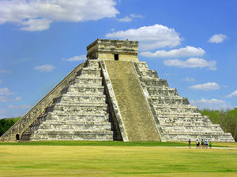 La antigua civilización ancestral de los Equidnas es el "Mundo Perdido" donde se origina esta historia.
Con la Civilización Equidna en ruinas, los pocos sobrevivientes se encargaron de proteger la Master Emerald y asegurarse de que el poder sellado dentro de ella nunca más se desate sobre el mundo. Las criaturas Chao que habitaron el santuario enfrentaron una extinción casi total, pero los ejemplares que sobrevivieron encontraron nuevos lugares para vivir y su número se recuperó poco a poco. Desde entonces el Espíritu del Agua llegó a ser conocido en la tradición con el nombre de Chaos, ya que había provocado un caos total, y las 7 Esmeraldas que usó para provocar ese caos fueron conocidas como las Esmeraldas del Caos (se mataron con el nombre...).
En el mundo actual, Sonic corretea por la sinuosa carretera "Speed Highway" que atravieza la moderna ciudad de
Station Square.
3.000 años más tarde ... La industria de armamento militar controlada por el Dr. Eggman se ha centrado en la ciudad de Station Square, como la futura ubicación de su propio imperio personal: Eggmanland. Eggman establece una base en la región de la selva vecina, Mystic Ruins, y mientras unos arqueólogos excavaban el sitio se descubre una antigua lápida con inscripciones misteriosas. La tableta narra la leyenda del Caos y de la caída de la Civilización Echidna dominada por el Knuckles Clan, lo que da una idea a Eggman. Si esta criatura del Caos puede acabar con una antigua raza poderosa, sin duda puede hacer el mismo trabajo sucio en la próspera ciudad de Station Square en la actualidad. Con este nuevo plan, el doctor viaja a Angel Island y destruye la Esmeralda Maestra, liberando al Dios del Caos, el cual se encontraba amargado todavía por la furia y rencor que vino guardando desde hace mas de 3.000 años. Eggman comienza a buscar las 7 Esmeraldas del Caos para restaurar el poder supremo de su nueva mascota arma: el Dios de la Destrucción, tratando de hacerle recobrar su antigua fuerza, sin darse cuenta de la verdadera magnitud del horror que ocasionó en el mundo antiguo, y que ahora él está desatando en el mundo moderno...
Desarrollo y Sistema de juego
Estructura del juego
Como se dijo antes, el juego iba a ser originalmente un RPG como lo había pensado Takashi Iizuka, pero para no correr el riesgo de un nuevo fracaso (como ocurrió con el Sega Saturn) entonces los de SEGA decidieron que mejor seguían haciendo para Sonic el formato de juego de plataformas, aunque como ya habían diseñado el mapeado para un posible RPG entonces la jugabilidad presentó una manera novedosa: Ahora en vez de pasar de una Zona a otra como ocurría antaño en el Mega Man Legends, habiendo tres Campos de Concentración Aventura principales, uno de una ciudad cosmopolita, otro de unas ruinas en medio de la jungla, y otro que era la enorme verga nave de Eggman. Sonic (o cualquiera de los personajes ¬¬) tenía que recorrer estas áreas para acceder a los distintos niveles, y generalmente debes moverte de una área a otra constantemente porque no tienes todos los niveles seguidos en la misma área, y para saber que te toca después tienes que hablar con la gente (cosa bastante molesta, especialmente para Knuckles que es un ermitaño cabrón como el Dr. House & Sheldon Cooper) y buscar objetos perdidos, como llaves, reliquias, y porquerías similares.
Se nota que los chicos han crecido en comparación con los juegos anteriores.
Además la jugabilidad ahora varía según el personaje, ya que en vez de que todos tengan una aventura de plataformas como ocurría en la saga del Sega Genesis, ahora solo Sonic corre como un hijo de puta pero los demás personajes tienen estilos de juego diferentes, o sea que en esa la cagaron bastante.
En suma, viene a ser un juego de aventuras, con una superestructura basada en RPG pero una infraestructura de niveles de plataformas, salvando las excepciones de todos aquellos personajes que no sean Sonic, a los que le cagaron la jugabilidad nomás para innovar y demostrar las capacidades del Sega Dreamcast a costa de sacrificarle la diversión a los otros personajes y robarles su derecho de corretear como Sonic, al cual por cierto le dieron 10 niveles para corretear y a los otros solo 5 (como mucho ¬¬).
NOTA: Las Esmeraldas Chaos ahora se consiguen por defecto durante el transcurso de la trama del juego, así que no hay que jugar en ningún Special Stage como pasaba antes en la época del Sega Genesis. Esto obviamente hace mucho mas realista al juego, pero le quita parte del encanto que tenía la franquicia durante los años '90 U_U.
Personajes
- anorexia para que baje la panza que tenía antes, y por eso ahora lo vemos mas esbelto, además de que como ha crecido ya está mas alto, y le dejaron el cabello mas largo y le pusieron lentes de contacto de color verde para hacerlo mas romántico, todo un sex-symbol para pendejas calienturientas que consumen el sexo subliminal que les suministra el Sonic Channel, para hacerle la competencia a los ecologista como todos los Badniks, algo que ya lo habíamos visto en Sonic 3D Blast cuando usaba un escudo amarillo-dorado, pero ahora tiene esa misma habilidad sin necesidad de ningún puto escudo. También a lo largo del juego puede coger
a Amy otros objetos que le dan distintas habilidades, pero en escencia su estilo es siempre el mismo: correr hechando putas, consumir drogas anillos giratorios, romper monitores de ítems, buscar las 7 Chaos Emeralds, y llegar al final del nivel para romper las bolas una cápsula de la cual liberará a todos los animalillos atrapados por el Dr. Robotnik... o sea, lo mismo de siempre, nomás que ahora en 3D de 128 BITs.
- F-117, y similares, con lo cual dará soporte aéreo a las guerras de guerrillas comandadas por su jefe y superior el Comandante demonio de Tasmania o algo similar, pero si lo vieras no te parecería tan chido porque mas bien parece que estuviera bailando ballet clásico al estilo Baryshnikov, lo que agrava severamente los rumores que se susurraban durante los años '90 acerca de que Tails en realidad sería hembra... o peor... !!!. En cuanto a su modo de juego, también debe correr pero ahora siempre va oliéndole el culo a Sonic, o sea, lo que siempre hizo durante toda su vida, de correr detrás del erizo para tratar de
follarlo alcanzarlo, nomás que ahora esto mismo lo hace siendo el prota de su propio modo de juego, ¡o sea que aún si eliges a Tails como protagonista igual seguirá siendo el lameculo de Sonic!. Lo que pasa es que la idea sería que juegues con Tails a modo de que lo veas según su punto de vista, o sea, el recorrido sería el mismo que con Sonic pero tu vas con Tails y Sonic corre delante tuyo, y por eso el modo de juego de Tails es una carrera donde debes llegar al final de cada fase y liberar a los animalejos que están dentro del contenedor antes de que llegue Sonic, a ver si así Tails por fin puede robarle el protagonismo al erizo de una buena vez!.

- equidna comunista entonces él tiene la misión sagrada de volver coger todos los fragmentos de la susodicha esmeralda y restaurarla, ya que como sabemos (y si no lo sabías lo verás en este juego) cada que la Master Emerald es removida de Angel Island, la susodicha Isla Flotante cae desde 1000000000 metros de altura y se estampa contra el océano, así que para que la jodida isla vuelva a levantar vuelo Knuckles tiene que volver a restaurar la Esmeralda Maestra y volver a colocarla en su sitio. Lamentablemente esto implica dos cosas muy malas: le cagaron la jugabilidad a Knuckles y en vez de tener una aventura de plataformas como Sonic ahora tiene que juntar 3 piezas de la Master Emerald en cada nivel, lo que le quita diversión y ya no tiene un recorrido sinuoso de tener que atravezar por toda la fase hasta el final como hacía en Sonic & Knuckles y Knuckles Chaotix, sino que ahora debes enfocarte pura y exclusivamente en recoger las tres piezas ocultas de la Master Emerald y una vez conseguidas se termina la partida. Para enmendarlo le dieron mas poderes a Knuckles, ahora puede excavar bajo tierra para
juntar mugre buscar esmeraldas, anillos, y porquerías enterradas, y principalmente puede dar puñetazos que lanzan esferas de Ki, que en realidad no son tan cool como deberían y en vez de ser unas ráfagas de energía roja o unas bolas de energía bien definidas, nomás son una mariconada de destellito violáceo, pero al menos con esto puede romper las bolas los contenedores y letreros de metal donde dentro puede haber esmeraldas (vamos... sabemos que los rompe nomás por puro vandalismo). Lo mejor es que también tiene la habilidad de incrementar su Ki al estilo Vegeta y cuando se carga con un aura roja lanza el Maximum Heat Attack, que es una especie de episodio esquizofrénico similar al Kaio Ken de Goku, donde vemos que Knuckles vuela frenéticamente por todos lados y mata a todos los badniks que encuentra sin importar que le hayan hecho algo a él o no. De más está decir que Knuckles mantiene sus clásicas habilidades de volar y escalar muros, pero la siguieron cagando en que solo planea en vez de volar libremente hacia arriba como debería, cosa absurda ya que antes con 16 BITs no se podía pedir demasiado, ¡pero ahora con 128 BITs sí deberían haberlo hecho bien! (y mas si se tiene en cuenta que sí vuela libremente hacia arriba cuando hace el Maximum Heat Attack). Finalmente, la otra cosa mala para Knuckles es que ahora que tiene que buscar fragmentos de esmeralda debe interactuar con la gente para buscar pistas, y ¡no hay nada peor para Knuckles que tener que hablar con otras personas!. Para colmo esas "personas" son humanos, y Knuckles odia a los humanos así que al menos si tuviera que hablar con otros Möbians no sería tan malo, pero esos simios afeitados que visten civilizadamente para ocultar que no lo son... ¡puaj!. En fin, Como anduvo de rotation buscando esmeraldas, se ganó el apodo de Treasure Hunter, lo cual para él es insultante ya que eso hace pasar en segundo plano su verdadero trabajo de Guardián de la Master Emerald, y por eso Sega usó aquello de "Buscador de Tesoros" para olvidar la calidad de Guardián del equidna y así no tener que otorgarle mas poderes que como Guardián debería tener (para que no opacara el protagonismo de Sonic), pero al menos sí lo hicieron mas esbelto y con el cabello mas largo para hacerlo mas romántico, igual que a Sonic y demás zoomórficos piojosos de la saga.
- sudacas que no habían podido comprar el Sega 32X, Sega Saturn, o gastarse el tampón) así que su única Sonic The Fighters, pero ahora puede hacer mas proezas con éste juguete ya que parece que Amy ZERO que intenta ovarios a Amy, sabiendo así que está ovulando y por ende ya está preparada para el sexo. La única forma que tiene Amy de evitar que el robot la viole es dándole
una chupada de martillazos por la cabeza para dejarlo mas turbado (no confundir con "masturbado") y así tener escasos segundos de ventaja para escapar de él, hasta llegar al final del nivel donde Amy coge con Sonic un enorme globo que la salva del peligro (hasta el siguiente nivel, donde la historia se repite, y así suscefully).

- pesca para no pagar impuestos (mas o menos como batracio éste para conseguir la esmeralda ésa. Big ahora tiene que dejar la pescar en una aburridísima travesía por distintas fases donde el decorado de la Zona es pura chuchería porque total nunca aprovechas nada del personaje ni la fase y nomás te sientas a
bostezar pescar y estampar el culo contra el suelo mientras reñiegas en un intento por pescar a esta rana de mierda en un simulador de pesca poco realista que lo terminas mandando a la mierda porque cada que consigues pescar la rana, la muy hija de puta se te vuelve a escapar y la tienes que volver a pescar en la siguiente fase.
- SS, así que Gamma se pone celosillo y se hace amigo de Amy, traicionando a Eggman. El estilo de Gamma es de ir a los tiros como en el Doom, pero en tercera persona en vez de en primera, y solo tienes un arma pero para compensarlo puedes rodar con las ruedas para ir mas rápido y volar con un rotor de helicóptero (y posteriormente un Jet tipo Booster). Lo malo es que el puto juego es por tiempo limitado y debes matarlos a todos para que te sumen segundos, o de lo contrario mueres por Time Over.
Personajes no seleccionables
- smoking conmbinada con chaqueta de aviador, también roja pero con cremallera blanca y tiras de cuero blanco alrededor, con botones amarillos, para que ahora parezca mas militar, acentuando así su aspecto de facho imperialista. También por el mismo motivo usa botas similares a borcegos y antiparras de aviador pero metálicas porque las diseñó él mismo con alta tecnología que le proporciona vista de rayos X para ver debajo de la ropa de las chicas sexys, las cuales por cierto escasean en este juego y por eso Eggman nunca se pone las antiparras ésas. A propósito del nombre, éste es el primer juego donde vemos que Sonic y compañía le dicen "Eggman", que parece que se lo dicen a modo de insulto porque él se hace llamar a sí mismo Robotnik, pero mas tarde descubrimos que en realidad los nippones que hicieron el juego siempre le dijeron Eggman al Dr. Huevón y lo de "Robotnik" solo fue un nombre inventado en la versión americana (que desilusión). En cuanto a lo demás, el hijo de puta sigue tratando de dominar el mundo con su ejército de Badniks y ahora planea usar al resucitado Dios de la Destrucción para aniquilar la ciudad de Station Square y reconstruír sobre sus ruinas su Eggman Empire (especie de Tercer Reich pero con bigotes grandes en vez de pequeñitos y rectangulares), y obviamente para eso necesita las 7 Chaos Emeralds y matar a Sonic y sus amigotes, nomás que ahora ya no viene con un nuevo Eggmobile al final de cada fase porque obviamente está mas viejo y mas cansado, así que solo se aparece dos o tres veces en todo el juego con el puto Egg-O-Matic 2000 tunneado, pero por lo demás le deja el trabajo sucio a su nuevo lacayo, el Dios Chaos.
- Palenque. Como según el mito este Espíritu del Agua causó las grandes inundaciones que destruyeron al Klan Knuckles de la Civilización Echidna, entonces Eggman lo despertó de su letargo para volver a causar Libia, Filosofía y Letras como para expresar la mas mínima inquietud que lo llevara a rebelarse contra Eggman, ya que permanece callado y virtualmente censurado todo el tiempo. A cambio de su silencio y sus servicios como matón, Eggman recompensa a Chaos proveyéndole de una Esmeralda Chaos cada que se las arrebata a Sonic y Tails, y Knuckles obviamente no puede ayudarlos porque está muy ocupado juntando los pedazos de la Master Emerald que Chaos rompió al ser liberado por el Dr. Eggman, ya que Chaos se encontraba atrapado dentro de ella y por esas casualidades de la vida la única forma de liberarlo era rompiendo la Esmeralda Maestra en mil pedazos para joderle la vida a Knuckles y evitar que vaya a darle soporte a Sonic y Tails, para así robarles todas las esmeraldas y darselas de comer a Chaos para hacerlo cada vez mas poderoso, destruír Station Square, dominar el mundo y todo eso.

- Plano Astral para romper las pelotas en el Altar de la Master Emerald donde eran cuidados por el Dios Chaos pero desde que lo encerraron en la prisión de la Master Emerald ahora estos enanos quedaron bajo custodia de todos los pobres infelices que jueguen a este videojuego. La verdad nadie sabe mucho del origen de los Chao, ni cual es su función en esta vida (ni en el argumento del juego), lo que es otra forma de decir que en realidad no sirven para una mierda y son una reverenda cagada que los pusieron en el juego para desperdiciar memoria del procesador cuando bien podrían haber usado esa memoria para cosas mas importantes, como darle mejores estilos de juego y poderes a personajes como Knuckles, Big, Tails, Amy, Tikal, etc, hacer mejores los gráficos, o descargar pornografía del internet. Como eso no se hizo porque pusieron a estos Chao de mierda, entonces estás condenado a jugar con los Chao y criarlos y educarlos, darles de comer, entrenarlos y ponerlos a competir en unas carreritas de mierda casi tan chafa como el Mario Kart, pero para colmo el Chao se mueve solo en la carrera y tu no lo puedes manejar así que lo cagas puteando al hijo de puta porque corre lento como el malnacido que es y te hace reventar hasta colmarte la paciencia, lo que es sin duda una gran piedra en el zapato para este juego, en contraste con todo lo anterior que la verdad venía bastante bien, pero con los Chao la terminaron cagando.
Ítems, Barreras, y demás porquerías
Como siempre en los juegos de Sonic hay objetos que te ayudan a pasar los niveles. Los anillos y los monitores de video ya son un clásico, pero ahora con 128 BITs obviamente ha habido modificaciones, así que veamos como cambiaron la onda ahora:

- Rings: Los clásicos anillos no podían faltar. Obviamente ya sabes para que sirven,
para masturbarse pero ahora son en 3D ya que todo el juego es tridimensional, así que cuando un badnik te golpea pierdes los anillos pero estos se dispersan en formación circular, siendo mas fácil volver a recogerlos. Lo demás es la misma mierda de siempre: coges 100 argollas y obtienes 1 vida, y además cada argolla que tienes al llegar al final de la fase otorga 10 puntos a la cuenta final del puntaje, cosa sumamente útil ya que necesitas como 100000000000000 de puntos para que te otorgue otra vida extra.
- Item Box: Las famosas cajas de ítems están de vuelta. Ahora han sido totalmente rediseñadas y ya no son un monitor de rayos catódicos sino que ahora son una cápsula mas alargada pero redondeada, totalmente transparentes por todos lados salvo la tapa y el pie que son rojos. Dentro ya no hay una pantalla captando la imagen con lluvia intermitente, sino que ahora la imagen del objeto aparece bien nítida pero flotando en medio de la nada ahí dentro del cristal. También hay novedades con algunas de estas cajetas de ítems:
- Anillos: Ahora ya no viene la caja de 10 anillos estandarizada como antes, sino que además de la caja de 10 anillos también hay otras de 5 anillos, y una aleatoria que bien puede tener 5 o 10, pero también vienen de 15, 20, o 40 anillos! (no te emociones que esas no te tocan casi nunca).
- Barrier: Siempre en los juegos de Sonic hubo alguna Barrera o Escudo para protegerte de un golpe, que en los dos primeros juegos era un escudo azul pero desde Sonic 3 fue reemplazado por tres tipos de barreras diferentes, de fuego, agua, y electricidad respectivamente. Ahora la cagaron y volvemos a foja cero donde solo tenemos un puto escudo de mierda que cumple la misma función que el viejo escudo azul: te protege de un golpe pero no te da los poderes elementales de los otros tres escudos. La diferencia es que a esta Barrera la hicieron color verde en vez de azul, como para no darle tanta egolatría a Sonic haciendo el escudo de su color porque si no iban a tener que hacer escudos de los colores de Knuckles, Tails, Amy, y todos los demás. Así en cambio hay un escudo standard para todos color verde, que total para encontentar a Sonic ya le dieron mas participación en el juego que al resto de los personajes.
- Jiryoku Barrier: El nombre en cool, pero en realidad es simplemente un escudo eléctrico similar al que había en Sonic 3. Resultó que al final la barrera verde no era la única y sí había al menos una barrera eléctrica después de todo, pero a olvidarse de las barreras de fuego y agua porque esas ya no volverán U_U. La Barrera Eléctrica es la única otra barrera además de la convencional color verde, así que ni te gastes en buscar a ver si hay otra porque no la encontrarás. Conserva la misma función de su predecesora del Sega Genesis: además de protegerte de un golpe también atrae los anillos imantándolos electromagnéticamente, pero la cagaron en que ya no te da la habilidad del salto sacachispas para saltar mas alto, y también la cagaron en el diseño porque en vez de ser un montón de rayos aleatorios de luz blanca ahora es un simple escudo azul eléctrico con rayos de electricidad estática en el centro donde está Sonic (volvieron a usar el color del erizo para el escudo ¬¬).
- High Speed: El zapato de Sonic para correr a velocidad supersónica ha vuelto. Ahora la diferencia es que
dura menos tiempo la música de la fase no se acelera cuando usas este ítem, sino que directamente la pista cambia a otra música exclusiva para el zapato, que es una cagada lo que sucedía en Sonic CD, siendo ese el único caso de un juego de Sonic con esta particularidad... hasta ahora. De todas formas la musiquita de ahora no es la misma que había en Sonic CD (¿y a quién le importa?).
- Muteki: El nuevo ítem de Invencibilidad ha sido totalmente rediseñado. Ahora ya no es un escudo de estrellitas circundantes, sino una luz mística que emana desde tu Hara al compás de una melodía también misticoide. Por lo demás es lo mismo, eres invencible por dos segundos, pero si caes al vacío o te aplastan, o te ahogas, pues te mueres... y si no mueres ahí entonces morirás apenas se acabe la protección temporal de la invencibilidad, que desaparece antes de lo que quisieras.
- 1UP: 1 Vida extra, identificada con la cara de Sonic, Tails, Knuckles, Amy, Big, Gamma, o sea, con el que sea que estás jugando (pero ahora empiezas el juego con 4 vidas en vez de 3 ;)).
- Bomb: Un nuevo item agregado al inventario. Se trata de una bomba que si la tocas mata a todos los enemigos que estén al alcance de su onda expansiva. Puede parecer un plagio a Bomberman pero no, en realidad no sorprende que Sonic & Knuckles pongan bombas, ya que como sabemos son revolucionarios Anarquistas y Comunistas, respectivamente.
- Spikes: Los clásicos pinchos que ensartan por el culo a Sonic y compañía si se caen encima de ellos. Son las clásicas camas de púas ya conocidas por los aficionados a la saga del erizo y por los Faquires de la castrati entonces mejor aléjate de estas trampas mortales.
- Point Marker: Obviamente si en los juegos anteriores las largas fases requerían de algún checkpoint para empezar desde allí cuando perdías, entonces ahora con estas fases mas complejas eso no podía faltar. La diferencia es que antes pasabas por un poste de estrellas que era similar a la farola vertical del Sonic 1, en cambio ahora lo cambiaron por una especie de barrera movil compuesta por dos de estos soportes pero con el poste acostado horizontalmente, cosa que la base de cada uno esté lo suficientemente distanciada como para que los postes horizontales se toquen entre si justo en los extremos. Cuando pasas por ahí las barras dan una vuelta y ahí queda registrado tu paso, como si fuera una línea de meta. Obviamente hicieron esta modificación porque ahora el plano es en 3D, cosa que antes con 2D era sencillo pasar por la farola nomás cuando venías corriendo linealmente, pero ahora con el espacio tridimensional podrías pasar por de lado del poste vertical sin tocarlo, y por eso es mas fácil poner este checkpoint en predisposición horizontal para que abarque mas espacio a lo ancho y así sea mas probable que lo toques cuando vienes corriendo a todo culo. Igual a los fans nostálgicos les gustaba mas el poste vertical, y lamentablemente le quitaron el símbolo de la Estrella Socialista que tenía hasta Sonic & Knuckles, aunque si se observa con atención vemos que en realidad las estrellas siguen estando pero en el pie de cada uno de los postes en vez de estar en el cabezal, así que ahora es menos visible y por eso en esta la cagaron terriblemente.
- Spring: Los clásicos resortes son indispensables. Ahora fueron rediseñados y como son en 3D ahora se puede ver la parte de arriba del resorte, cosa que antes solo se veía desde el costado (en realidad en Sonic 3D Blast también se veía desde arriba, pero ese juego no cuenta como parte de la continuidad oficial porque fue un fiasco). Como ahora se ve la parte de arriba del resorte entonces aprovecharon y le dibujaron la Estrella Socialista que le habían quitado a los Checkpoints, así que como vemos no es que hayan dejado de ser revolucionarios de izquierda, al contrario, lo siguen siendo solo que ahora cambiaron la estrella de lugar y la pusieron en un resorte, obviamente para dar un Gran Salto Adelante, que se refiere tanto al progreso que significó este juego como también a la Revolución Cultural de Mao Tse-Tung. Lo que ahora cambia con estos resortes es que antes en los juegos del MegaDrive tú tenías que maniobrar para dirigirte a donde tu querías luego de que el resorte de daba el envión, pero ahora en cambio una vez que lo tocas vas directamente a donde el resorte te manda sin poder variar la trayectoria, lo que demuestra que ahora se tomaron mas en serio aquella política de la Economía Planificada para conducir a las masas en la dirección correcta del Socialismo Científico de la filosofía marxista.
- Dash Panel: Es una bobina que cuando la pisas te manda a la mierda y por eso sirve para acelerar y salir corriendo a mil por hora. Cumple la misma función que las bobinas de ruedas que había en la fase Chemical Plant Zone del Sonic 2, pero las de ahora tienen un diseño totalmente diferente porque están en el suelo y se accionan cuando pasas corriendo sobre ellas, en cambio las otras tenías que pasar corriendo entre medio de ellas porque estaban a la altura de Sonic y no al ras del piso. En definitiva, la misma mierda con distinto olor.
- Jump Panel: Son unas plataformas hexagonales que parecen paneles solares y tienen cada una un número distinto. Están esparcidas por distintas partes de algún área determinada y cuando Sonic pisa la que tiene el número 1 debe saltar y la plataforma lo mandará a la
mierda siguiente, que tendrá el número 2, y así sustantivamente a la plataforma 3, 4, o las que sean, hasta llegar a la última, lo que supone un atajo para Sonic, pero si se tarda medio segundo de más en saltar la plataforma entonces perderá el efecto del impulso y se caerá a la mierda, que puede ser desde caer en un sitio mas lejano que te haga perder mas tiempo o hasta caer al vacío y morirte, según en que lugar se encuentren estas mierdas de plataformas en cada caso.
- Switch: Un interruptor que sirve para modificar algo de la fase, generalmente abrir compuertas, activar cohetes propulsores, o cualquier otra cosa necesaria para proseguir el camino. No es nada de otro mundo, es un interruptor y ya, así que no esperes mas explicaciones detalladas al respecto porque sencillamente no las hay.
- Rocket: Un cohete propulsor modelo Taepodong de esos que se fabrican en la satélites artificiales como el Kwangmyŏngsŏng-1, que fue lanzado precisamente en 1998 para conmemorar el lanzamiento del Sonic Adventure (por mas que los gringos digan que se cayó al océano, que obviamente dicen eso porque los Kim Il-Sung, y año 100 del Calendario Juche, que el hecho de que la Revolución Coreana haya sobrevivido es motivo para celebrar y presagia buenos augurios (entonces sí era por el Taepodong a Sonic & Knuckles para que les sirvan para propulsarse a las áreas elevadas de las zonas y así darle caza a Robotnik y a su ejército de robots tecnócratas imperialistas, aunque en realidad Knuckles no necesita el Taepodong porque ya sabe
Taekwondo volar y escalar muros para subir a las áreas elevadas, pero convengamos que por mas pacifista que dice que es nunca le molesta demasiado usar armas para combatir en las guerras de guerrillas subversivas.
- Iron Ball: Hierro que desafían la física newtoniana y flotan en el aire. A veces pivotean alrededor siguiendo patrones, pero aunque no lo hagan debes tener en cuenta que éstas Iron
Man Balls son peligrosas, así que no te les acerques demasiado.
- Hitodama: Según el espíritu de Tikal es liberado (junto con Chaos) de la Master Emerald aparece con forma de Hitodama, aunque los equidnas eran como los antiguos mayas, así que no eran shintoístas, pero los de SEGA son japoneses, y los japos sí son shintoístas y por eso hicieron que Tikal aparezca en forma de Hitodama. Si durante el juego encuentras una Hitodama que te habla, es Tikal, que te dará
una chuapada un consejo sobre como pasar la parte del juego en la que estés, y en el caso de Knuckles le dará una mamada una pista sobre donde se encuentran los fragmentos de la Master Emerald que está buscando.
- Hint Box: Son monitores flotantes que proporcionan información en caso de que no sepas como invocar a los espíritus para contactarte astralmente con la Hitodama de Tikal. Estos monitores dan pistas pero generalmente para los Adventure Fields y no tanto para los Action Stages, salvo en el caso de Knuckles donde dan tres pistas por cada una de las tres piezas de la Master Emerald que hay que buscar (porque el equidna no tiene buena memoria debido a motivos que desconocemos, y a veces pierde la concentración por estar pensando en otra cosa).
- Dash Ring: Tails tiene la exclusividad de tener para él solo disponible en todas las fases a una serie de aros metálicos que forman túneles de aire por los que puede volar a través de ellos para que una explosión aérea le dé mas velocidad. De esta manera, el chico maravilla puede llegar a una serie de accesos directos inaccesibles a Sonic (porque Sonic no tiene las habilidades de hacker de Tails). Obviamente hicieron estos aros de metal que propulsan a Tails para compensar el pésimo sistema de vuelo que le dieron, ya que no lo dejan volar por mucho tiempo porque se cansa en seguida (¡pero si en el Sonic 3 de Genesis volaba durante mas tiempo!).
- Capsule: La famosa Cápsula
Hoi-Poi donde Robotnik mantiene prisioneros a los Sonic & Tails no tienen disponible la cápsula porque terminan la fase al encontrar una Esmeralda Caos, pero luego sí ya tienen la puta cápsula cada que vuelven a jugar la fase en el modo Trial para sumar puntos y conseguir emblemas inútiles.
- Emblems: Los Emblemas son unas medallas con cara de
culo Sonic que ganas cada vez que pasas un nivel, cumples una misión, y tareas similares dentro del juego, pero también hay emblemas ocultos en los Campos de Aventura, y para encontrar los emblemas de los Campos de Concentración Aventura tienes que usar distintos personajes, porque según las habilidades de cada uno habrá emblemas que podrás obtener y otros no. En total hay 130 emblemas, y una vez que tengas todas estas medallas puedes acceder a la Liga mercado negro, ya que son Chao con joyería fina en su ADN y por eso su comercialización es ilegal (porque lo prohibido siempre se vende mas caro de lo que vale).
Objetos Clave (Upgrades)
Los Upgrades son Objetos Clave necesarios para pasar el juego. A diferencia de los ítems convencionales que se encuentran en los Action Stages y se gastan cada vez que los usas (como los escudos, anillos, y demás porquerías) los upgrades en cambio son objetos permanentes que no se gastan ya que no pueden deshecharse ni volver a conseguirse, y son indispensables porque proporcionan una mejora para el personaje que los usa, potenciando sus habilidades. Estas Mejoras se encuentran en los Adventure Fields, y como vemos fueron puestas en el juego para hacerlo mas complejo, ya que originalmente habían pensado en hacer el game como un RPG como ya se dijo antes. Aunque al final se cagaron en la idea del RPG y volvieron a hacer un plataformas, igual los Upgrades se mantienen porque sirven para demostrar que el Dreamcast permite hacer plataformas superiores a la bazofia del Gamecube (que después terminó plagiando juegos de Sonic para sobrevivir). Hay distintos Upgrades para cada personaje, y los veremos a continuación:
- Light Speed Shoes: Los Zapatos de Velocidad de la Luz son el principal objeto clave para Sonic. Como era de esperar, le permiten correr a la velocidad de la luz, y así encubrir su mas terrible secreto: Sonic en realidad no tiene el poder para correr rápido, y esa velocidad se la proporcionan los zapatos como éstos. Para conseguirlos Sonic es capaz de todo, incluso meterse a las alcantarillas de Station Square y buscar un par de zapatos ortopédicos que alguien arrojó al drenaje por casualidad. Una vez que los encuentra, se los pone sin pensarlo dos veces y con la potencia extra que siempre dan las zapatillas nuevas es capaz de ejecutar el Light Speed Dash, una nueva habilidad que le permite correr por los senderos formados por anillos alineados, y así tomar atajos que antes no podía (para escapar de Amy, y de su Club de Fans, que lo matarían si se enteraran que el erizo necesita zapatos ortopédicos para correr mas rápido).
- Crystal Ring: El Anillo de Cristal es un brazalete de cristal. Sonic encuentra esta argolla de cristal subiendo las escaleras del hotel de Station Square, y le termina sirviendo para
masturbarse cargar mas rápido la energía del Light Speed Dash, pero fuera de eso no sirve para nada mas, y por eso si no consigue primero los zapatos entonces no podrá coger el anillo de cristal para coger energía para hacer el Light Speed Dash y escapar de Amy (para no coger con ella).
- Ancient Light: La Luz Ancestral es el último upgrade de Sonic. Lo encuentra en Angel Island, antes de cruzar el puente de madera que lo lleva al Altar de la Master Emerald, o a una muerte segura tras caer al precipicio por correr demasiado rápido sobre un puente sin baranda (sí, eso es lo que seguro te pasa la mayoría de las veces). Como sea, resulta que en Angel Island había una luz misteriosa que obviamente es un remanente de la energía de los ancestros de Knuckles, y Sonic absorbe esta luz para desbloquear otra de sus habilidades: el Light Speed Attack, que viene a ser la misma mierda que el Light Speed Dash pero en vez de correr sobre caminos de anillos ahora también puede hacerse bola y matar a los enemigos que estén alineados en formación, y así recorre también caminos de Badniks matandolos en su paso, tal como hace al recorrer caminos de anillos cogiendolos al paso (que si fuera al revés, mataría a los anillos y a los Badniks se los cog... bueno, ustedes entienden a que me refiero).
- Jet Anklet: La Tobillera Propulsora es el primer upgrade para Tails. Probablemente la haya diseñado él mismo, al escapar volando de Kazuo Shii, quien a su vez se lo iba a vender al Partido de los Trabajadores de Corea para su industria armamentista de misiles antitanque (parece que el simpático zorrito es todo un nerd devenido en delincuente juvenil, tal como uno que yo conozco...). Para que no vuelvan a arrestarlo, Tails escondió esta Tobillera Propulsora en un recoveco de Station Square junto al Twinkle Park, pero solo entrando por el drenaje puede acceder a él, sabiendo que todos los idiotas van a estar muy distraídos llendo a la feria y ni de puta casualidad van a querer meterse a la desembocadura de las aguas residuales, y por eso éste es el escondite perfecto para el Jet Anklet, que le permite a Tails volar 0,2 m/s mas rápido (joder, tanto lío por eso ¬¬).
- Rhythm Badge: La Medalla Ritmo es la que ganas si vences al Líder del gimnasio de los pokemon del tipo música, porque originalmente el juego iba a ser un RPG, pero como no existen los pokemon del tipo música al final el juego fue hecho del género de las plataformas, pero la medalla quedó. Para evitar problemas legales con Noentiendo, Sega of Japan le cambió el nombre a éste upgrade y en Japolandia le pusieron Rhythm Brooch (Broche del Ritmo) pero al resto del mundo le importa una reverenda mierda el nombre que usan originalmente en Japón los diseñadores de videojuegos, porque total los yankis siempre terminan haciendo lo que mierda se les da la gana y por eso a este objeto le cambiaron el nombre por Rhythm Badge, tal como le han cambiado el nombre a los villanos de Streets of Rage, y a los tropocientos cincuenta mil pokemones de los cuales solo conocemos el nombre que los gringos les pusieron, y no sus nombres de la versión japonesa original. ¿Y a todo ésto que carajo hace la Medalla Ritmo?, sencillo: sirve para que Tails pueda bailar ballet como Barishnikov, lo que le permite usar su ataque Tail Swipe, que como vemos también era un movimiento originalmente pensado para los pokémon, pero los de SEGA lo usaron para su juego de plataformas. Este objeto
inútil misterioso solo se encuentra en la extinta Civilización Echidna, por lo que Tails solo puede encontrarlo cuando viaja al pasado al proyectarse astralmente por obra y gracia del porro espíritu de Tikal, y si no la coge en esa ocasión (a la medalla) nunca mas podrá volver a hecharle las manos encima (y lo mismo vale para con Tikal).
- Shovel Claws: Las Garras Pala son unas antiguas armas usadas por los
Wolverine, también sirven para excavar bajo tierra en busca de objetos perdidos, que pueden ser desde anillos y profilácticos usados, hasta las tan preciadas hojas de marihuana piezas de la Master Emerald, razón por la cual este Upgrade es indispensable para Knuckles.
- Fighting Gloves: Los Guantes de Lucha son obviamente la versión de unos guantes de Kick Boxing para Knuckles, los cuales son idénticos a sus guantes convencionales pero de color dorado en vez de blanco. Le sirven a Knuckles para ejecutar la técnica Maximum Heat Attack, que como sabemos es una técnica milenaria de las Artes Marciales Chinas de estilo interno, y se hace usando el Poder Oculto dentro del Tan-Tien, desde el cual emana el Chi acumulado tras años y años de reprimir la sexualidad (por eso Knuckles vive solo en una isla alejado del contacto físico con otras personas). Como era de esperarse, el "Máximo Ataque de Calentura" podría sobreexcitar a Knuckles y causarle una explosión de lefa que mancharía sus guantes convencionales, y por eso el equidna va a la selva de Mystic Ruins a buscar estos guantes protectores (pero puede que ni te hayas enterado de su existencia porque total no son necesariamente indispensables, y puede que te hayas pasado todo el juego sin necesidad de haber cogido estos guantes de Muay Thai, y hasta quizá ni siquiera te habías dado cuenta de que existían).
- Warrior Feather: La Pluma del Guerrero es el primer upgrade de Amy. Obviamente es un antiguo ornamento de plumas usado antaño por los Guerreros de la Civilización Echidna, pero Amy no tiene ni puta idea de que se trata de una reliquia antigua y nomás se lo pone porque le parece que así queda mas coqueta y que con eso va a atraer a Sonic (Error!). Amy consigue este objeto cuando gana en el mini-juego Hedgehog Hammer, pero solo si supera el máximo puntaje que Robotnik había hecho antes que ella. La Warrior Feather le otorga a Amy la habilidad para ejecutar el Spin Hammer Attack, que no es el equivalente al Spin-Dash de Sonic pero es un ataque donde usa su martillo Piko Piko Hammer golpeando en forma circular continua al girar como trompo alrededor de ella misma, y con eso mata a todos los Badniks y robots violadores que se le acerquen, pero al final termina tan mareada por haber dado vueltas en 360º a 10.000 revoluciones por minuto, que la dejan toda revuelta y caminando confusa como quinceañera ebria, y por eso si Sonic la ve así se va a pensar que ya fue violada por el androide ZERO, y no va a querer tirar con Amy porque ni creas que la va a meter en una "zanja" que ya fue "excavada" por el "martillo" de otro sujeto (y menos si es un robot vibrador).
- Long Hammer: El Martillo Largo es el otro upgrade de Amy. Se trata obviamente de una versión mejorada del Piko Piko Hammer, el cual como indica el nombre es mas largo, y lo hicieron de color verde para diferenciarlo del original, aunque muchos creen que en realidad el Long Hammer era amarillo igual que el Piko Piko Hammer, pero Amy se entusiasmó al verlo mas largo, y se decidió a Sex Shop el juego "Hedgehog Hammer", donde como vemos siempre le dan como premio a Amy un nuevo juguete sexual (así es como consiguió el Anal Intruder 2000 que guarda en el closet). Esta vez Amy debe obtener 3000 puntos en el Hedgehog Hammer, antes de que el Egg Carrier caiga al océano (Oops! Spoiler^^) o de lo contrario tendrá que jugar al mini-game en el modo Trial donde te suele cagar y no te da el premio que te mereces. La función de este Martillo Largo es simplemente
masturbar a Amy expandir el radio de alcance del martillazo convencional, permitiendo matar a enemigos que están 0,50 cm mas lejos del alcance del Piko Piko Hammer standard, y principalmente expandir el radio de alcance del Spin Hammer Attack, que ahora llega a 1,20 cm a la redonda mas o menos, pero fuera de eso no es indispensable ni nada por el estilo, y Amy se sigue mareando después de hacer el Spin Hammer Attack, por lo que sigue pareciendo que ZERO ya la ha violado y por eso Sonic no se le va a acercar (que aunque no la hayan violado igual tampoco se le acercaría ni por asomo).
- Power Rod: Aunque suena a suplemento dietario masculino para mejorar la erección, en realidad se trata de una Caña del Poder, que es simplemente una caña de pescar que le permite a Big The Cat lanzar el anzuelo a una distancia mayor (o sea que no le da ningún "poder" a Big, ni tampoco le pone mas "dura" la "caña"). Big encuentra esta caña de pescar en Mystic Ruins, de hecho en su casa (si es que a esa choza se la puede llamar "casa") debajo de su propia cama, por lo que suena sospechoso que alguien guarde bajo su cama una enorme "caña" con el "poder" de "alargar el alcance del anzuelo"... y para colmo Big es un hombre adulto que convive unicamente con una ranita, así que si sumamos todos los ingredientes podemos llegar a pensar que Big es... un buenazo tontorrón muy inocente que no tiene maldad ni mala intención (¿o pensaste que iba a decir que era gay?).
- Life Belt: El Cinturón de la Vida es otro upgrade para Big The Cat. Se trata de un cinturón de la talla de Big (muy difíciles de conseguir en tiendas de ropa convencionales) que el susodicho gato obeso encuentra en Mystic Ruins, justo en la entrada de Ice Cap. Este cinturón sirve para
sostener los pantalones, cosa que Big no tiene mantener a Big flotando en el agua y evitar que se ahogue, ya que como era de esperarse un sujeto enorme y grasoso con exceso de capas y capas de colesterol y triglicéridos no puede mantenerse a flote en el agua y se hunde como ancla de navío, y por eso Big necesita este cinturón salvavidas que lo mantiene a flote, por lo que suponemos que debe estar relleno con Poliestireno Expandido (aunque Big está mucho mas "expandido" que el poliestireno). Al flotar en el agua Big puede pescar peces (ni modo que pesque aves ¬¬) que están a distancias mucho mas lejanas a la costa, lo que le permite alcanzar presas mas grandes para seguir engordando hasta que ya no le quede el cinturón y se tenga que poner otro cinturón, pero esta vez será un cinturón gástrico.
- Lure: Son distintos Anzuelos que Big va encontrando por ahí para ir mejorando su equipo de pesca, cosa que buena falta le hace porque hasta ahora vemos que tiene muchas cañas, anzuelos, y el cinturón para obesos, pero no tiene ni una sola carnada porque todas las lombrices las ha comprado Mc Donald's para hacer sus famosas hamburguesas que causan problemas renales. El primer anzuelo lo encuentra en las aguas residuales de Station Square, justo de camino a donde Tails encontró el Jet Anklet, y uno se pregunta como puede ser que este anzuelo sea una mejora, ya que si alguien lo arrojó por el drenaje significa que tan bueno no era. El segundo anzuelo se encunetra en Mystic Ruins, en una cueva secreta dentro de la selva, cerca de la casa de Big, por lo que suponemos debe ser de él y lo perdió en medio de la selva ya que no lleva pantalones donde podría guardar los anzuelos en los bolsillos. El tercer anzuelo es el único upgrade en todo el juego que se encuentra en una Etapa de Acción en vez de en el Campo de Aventura correspondiente. Se halla en el nivel Ice Cap, donde Big tiene que escalar y subir por unas escaleras de hielo hasta llegar a un pozo de agua helada donde debe bucear para
congelarse las pelotas llegar hasta el otro lado donde luego ve unos huesos de dinosaurio congelados en el hielo. En esa área hay un punto donde el hielo está algo desquebrajado y Big puede romperlo para zambullirse en el agua helada bajo el casquete y congelarse el ojete (que bella es la poesía). Allí debajo hay un cráneo de dinosaurio sumergido en el agua helada, y dentro de las cuencas oculares del dinosaurio está el tercer anzuelo (tanto liarla por esta mierda). El cuarto y último anzuelo está en el calabozo del Egg Carrier, en la celda mas cercana a la puerta de la prisión, pero no sabemos donde carajo se guarda Big todos los anzuelos que encuentra, ya que no tiene pantalones, ni bolsillos, ni nada, así que suponemos que los anzuelos los debe llevar enganchados en las bolas (por eso en sus niveles trata de no caminar demasiado y se sienta lo antes posible).
E-102 γ ya quisiera una de éstas...
- Jet Booster: El Propulsor a Chorro es el primer upgrade de E-102 "Gamma". Es un dispositivo que le permite a Gamma volar y/o hacer descensos lentos, tal como hizo E-101 "Beta" en su primera pelea contra Gamma, pero a Beta ya lo habían fabricado por defecto con este propulsor a Chorro porque era el favorito de Robotnik (y líder de la Gestapo) en cambio Gamma es un novato y tuvo que ganárselo, y para eso debe ir al interior del Egg Carrier en el habitáculo principal donde está el puente, y ahí debe buscar la puerta de entrada al cuarto de almacenaje de las armas (Weapon's Storage) donde ahí dentro está el Jet Booster, que es la única arma que queda en el depósito porque a todas las demás Eggman ya se las vendió a Tío Sam.
- Laser Blaster: El Cañón Laser es el último upgrade para E-102 Gamma. se trata de una versión modificada de su arma, que le da un patrón de ataque más amplio. Básicamente lo que hace es disparar misiles láser de calibre mas grande, lo que amplia el radio de la onda expansiva de las explosiones causadas tras el impacto de los proyectiles, lo cual obviamente sirve para expandir el rango del daño causado a los enemigos, que obviamente Eggman diseñó para que Gamma lo use contra Sonic y sus amigotes, pero termina usándolo contra los propios badniks de Eggman. El Laser Blaster se encuentra en el cuarto de la reserva de agua (Water Reserve) que está ubicado en el mismo habitáculo principal del Egg Carrier donde están el monorail, pero exactamente en el extremo y lado opuesto al cuarto de armas donde estaba el Jet Booster, como para que Gamma tenga que buscar un poco mas y no lo tenga todo tan fácil (que total conseguir armas de guerra gratis ya es demasiado beneficio, así que al menos que se mueva un poco para ir a buscarlas).
NOTA: Como vemos Sonic es el que sale favorecido al ser el único que le dan tres upgrades, en cambio a todos los demás solo les dan dos. Claro que básicamente Sonic obtiene una sola habilidad con los upgrades, y el anillo de cristal y la luz ancestral solo son mejoras para la misma habilidad que le dieron los zapatos ortopédicos, pero igual choca que al erizo le den tres regalos y al resto solo dos. Por otro lado Big termina siendo el que encuentra mas porquerías, con 6 upgrades en total si se cuentan los 4 anzuelos mas la super caña y el cinturón negro de pesca, pero claro que los anzuelos son una cagada y la super caña no le permite pescar a Gyarados ni a ningún pokémon legendario de agua, así que el cinturón de Orión pesca resulta ser el mas visible de los upgrades de Big, y por eso al final sus 6 objetos no superan a los 3 de Sonic, y por eso el erizo siempre termina llevandose la mejor parte y a los demás los cagan y siempre les toca menos.
Niveles, Fases, Zonas, o como mierda se diga
Bueno, en realidad no se dice ni Niveles, ni Fases, ni Zonas, en este juego le cambiaron la onda y ahora ya no se dice nada de eso sino que como ya se había dicho antes lo que dicen ahora es Adventure Field para las tres grandes áreas generales de grandes extensiones donde está cada nivel jugable, y a los susodichos niveles jugables se les dice Action Stage porque son las únicas fases de acción que hay (aunque los de Big The Cat no tienen mucha "acción" que digamos...). Bien ahora, veremos cuales son estos jodidos niveles o como mierda sea que se les diga a los unos y los otros:
Adventure Fields
| Foto
|
Nombre
|
Descripción
|
Fases
|
|
|
Station Square
|
Es la ciudad elitista y cosmopolita poblada de seres asquerosos que parecen simios afeitados que se creen superiores a los animales zoomórficos tipo kemono del planeta de Sonic. La música de fondo es una cagada y hay pocos autos circulando (como en Corea del Norte) pero hay un Casino, un Hotel con playa privada, una estación de metro, un parque de diversiones y el ayuntamiento lleno de políticos corruptos (como en Estados Unidos). Demás está decir que en ésta área metropolitana se desarrollan todos aquellos niveles que tengan por escenografía alguna temática relacionada con la enajenadora y alienante vida moderna de la sociedad de consumo. En suma, aquí se desarrolla el puto capitalismo, que siempre lo hacen ver como gran cosa pero solo es un mundo "civilizado" para el 1% de los privilegiados que controlen la economía de la city, y todos los que queden afuera viven en ruinas.
|
* Emerald Coast
* Casinopolis
* Twinkle Park
* Speed Highway
|
|
|
Mystic Ruins
|
Son las ruinas aquellas que dijimos que es donde viven todos los excluídos sociales y marginados indignados que quedaron fuera del sistema neoliberal conservador de los arios que viven en la ciudad neonazi de las SS (Station Square). Estas ruinas están en una selva espesa que viene a servir de arquetipo tanto para Latinoamérica como para el Sudeste Asiático, aunque también como sabemos se le dice "Rey de la Selva" al León, así que también viene a simbolizar África, lo que en definitiva representa a todos los países periféricos del tercer mundo que fueron squeados por las potencias imperialistas centrales, representadas en este juego por la anteriormente mencionada Estación Cuadrada. Así las cosas, las Ruinas Místicas llevan su nombre porque es el lugar donde antaño se erigía la Antigua Civilización Echidna que otrora fue la potencia mas próspera del planeta pero ahora ya cayó en desgracia y quedó en ruinas, lo cual es el destino de todas las civilizaciones e imperios del mundo (los gringos serán los próximos). En estas ruinas entre mesoamericanas e incaicas se esconde una pirámide de puta madre, un cenote sagrado, unas cuevas ventosas, y por supuesto un pasaje secreto que conecta directo con Angel Island, la mística y sagrada isla de Knuckles que también cayó, pero literalmente (desde tropocientos metros de altura).
|
* Windy Valley
* Ice Cap
* Red Mountain
* Lost World
* Final Egg
|
|
|
Egg Carrier
|
La super-descomunal y archirobotizada y fuertemente armada fortaleza alada del Dr. Ivo "Eggman" Robotnik. Viene a ser una especie de remake muy remasterizado de la Wing Fortress que apareció antaño en Sonic 2, pero los fans siempre quieren mas y se quedaron con ganas de ver un remasterizado Death Egg. Así todo, el Egg Carrier cumple lo que promete, ser una enorme y descomunal fortaleza aérea que le sirve a Eggman tanto de nave de combate aéreo como de base de operaciones con todo lo que un autoproclamado general imperialista megalómano de la burguesía aristocrática necesita tener abordo: piscina, solarium, sala de juegos, dormitorio con spa, baños extra por si el excusado se tapa (es que Eggman es un burgués, y ellos comen en exceso por el pecado de la gula, para ingerir hasta la comida que no quieren y así evitan dársela a los pobres que la necesitan). En esta nave de guerra Eggman tiene su laboratorio desde donde ensambló a los robots de la Serie E, además del cuarto de máquinas y un switch que cambia el formato de la nave como si se tratara de una especie de Transformers, pero en vez de robot la nave se transforma en... bueno, sigue siendo una anve pero mas estrafalaria, nomás para demostrar el derroche de dinero que se destina al presupuesto de defensa para la industria armamentista militar.
|
* Sky Chase Act 1
* Sky Chase Act 2
* Hot Shelter
* Sky Deck
|
Action Stages
- Emerald Coast: La Costa Esmeralda es una playa paradisíaca de arena blanca y mediodía permanente con agua cristalina y cielo despejado. Está ubicada en la costa lindera al Hotel de 5 Estrellas, lo que implica que fue privatizada para que solo aquellos que tengan Hotel, donde vemos unas rocallosas y acantilados peligrosos con loopings re-alucinantes al mejor estilo de las volteretas acostumbradas a ver en todas las Zonas del Planeta Möbius vistas antaño en juegos anteriores. Básicamente la fase tiene dos "Actos" pese a que ya no se le llaman así (pero los sonicmaníacos somos nostálgicos...) y la música cambia ligeramente de un acto a otro tal como sucedía en misántropo sociópata que odia a toda la gentuza asquerosa y estúpida que va a la playa a malgastar su vida y perder el tiempo con banalidades como hacer exhibicionismo y mirarle el culo a las pendejas putas. Amy por su parte no va a la playa debido a su complejo de inferioridad por tener las tetas muy pequeñas y pasar vergüenza al compararse con las calientapollas que van a hacer topless sobre la arena y superarían a Amy en su fallido intento por calentar a Sonic (además de que Amy está en "esos días", por lo que la tanga ajustada le podría hacer perder el sangrado y despedir olores fétidos, los cuales irritarían aún mas su mal carácter así que es mejor que se quede en el hotel y ni piense en bajar a la playa).
Windy Valley es el primer nivel para Tails, el segundo para Sonic, y el tercero para E-102 "Gamma" (pero solo Gamma se enfrenta a su
soldado clon azul, que es mas facho que
Fraga).
- Windy Valley: El Valle Ventoso es una zona de alta montaña ubicada en Mystic Ruins, por lo que deberás tomar el Twister, pero bueno, aquí eso no pasa porque como sabemos las leyes físicas del mundillo de Sonic son algo diferentes. Finalmente, tras salir del tornado y catapultarse con un resorte que estaba convenientemente ubicado justo donde era necesario, Sonic llega al tramo final, The Air, donde la musiquilla ya no es frenética como en el tornado sino que ahora cambió nuevamente y es un remake de la música de Green Grove Zone del Sonic 3D: Flickies' Island (para agasajar a los fans). Aquí la escenografía es muy distinta, con pistas largas de recorrido en caracol a cielo abierto y con suelo de metal de rejas, lo que demuestra que este último acto de este nivel está basado en aquel similar Special Stage de ese mismo último juego de Sega Genesis anteriormente mencionado. Si Sonic no cae al vacío y llega hasta el final habrá conseguido una esmeralda, lo mismo que le pasa a Tails, a quien por cierto lo cagan porque éste último tramo es la única parte de la fase que le dejan jugar. A Knuckles también le hubiera gustado este nivel pero con su habilidad para volar hubiera sido muy fácil y por eso no permitieron que lo jugara. De más está decir que Big es muy gordo para una fase aerodinámica como ésta y por eso no lo pusieron, y a Amy claro que nos gustaría verla haciendo berrinches dentro del tornado cuando se asustara... pensandolo bien, ¡no, ¿luego quien la soportaría a la inaguantable ésta?!.
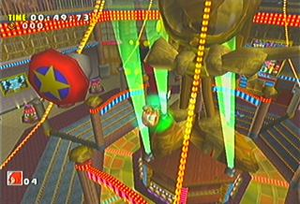 Casinopolis es el segundo nivel para Knuckles & Tails, y el tercero para Sonic (pero solo al erizo le erigieron una estatua de oro en su honor U_U).
- Casinopolis: El tragaperras y los pinballs, aquí Sonic puede acceder a dos juegos de pinball de los cuales el primero tiene combinada la máquina traga
pollasperras que es un remake de la que ya conocíamos desde Sonic 2 y Sonic & Knuckles, nomás que ahora agregaron a Amy en su versión clásica como para demostrar que ella sí estuvo presente en la era dorada de los años 90 (pese a que no salió en ningún juego de la Sega Genesis). Obviamente hay que alinear las caras de los personajes y si salen tres iguales ganas anillos, ahora para mejorarlo también puedes hacer lineas verticales y diagonales, pero obviamente si sale Robotnik pierdes y te jodes. Además de éste hay otro pinball, que es de la saga NiGHTS into DREAMS... (¿Nights into Dreams... fue un famoso (jaja) juego de Sega Saturn que reemplazó a Sonic en 1997 mientras se programaba el Sonic X-treme que finalmente nunca salió al mercado, y por eso SEGA trató desde entonces mantener con vida a NiGHTS como para demostrar que el Sonic Team no ha creado solamente a la saga de Sonic, y además como mérito para NIGHTS por haberle hecho el aguante al erizo mientras éste se encontraba indispuesto (¿que no era Amy la que estaba "indispuesta"?). Como sea, si querían que Nights se haga su lugar en la industria de los videojuegos entonces deberían haberle hecho su propio juego para Dreamcast, pero en vez de eso los tragamonedas (golpeándolas) o en las duchas del pinballs (ni en las alcantarillas) pero para cuando Knuckles llega el casino ya fue remodelado gracias al dinero que perdió Sonic, así que ahora hay una estatua de oro en su honor, que Knuckles destroza de un solo golpe para ver si hay esmeraldas debajo (vamos... sabemos que las destruíste de envidioso porque los del casino no hicieron una estatua de oro en honor a Knuckles). Además con Knux puedes volar para ir a los pisos superiores del casino donde ahora hay una especie de show de strippers marionetas con temática de Keira Knightley, y por eso Knuckles se enfada y le prende fuego al casino, le roba las tres piezas de la Master Emerald que tenían como primer premio, y se va antes de que venga la policía.

Ice Cap es el segundo nivel para Big, el tercero para Tails, y el cuarto para Sonic (pero solo Big tiene suficiente grasa corporal como para soportar las gélidas temperaturas sin que se le congelen las pelotas).
- Ice Cap: La Capa de Hielo es el remake en Snowboard que por esas casualidades de la vida estaba justo ahí al alcance del erizo para que la use para escapar rápido de la avalancha que se viene con todo!!!. Sonic va en picada cuesta abajo descendiendo por la montaña nevada a la vez que evita los bombardeos de las aeronaves no tripuladas de Robotnik y de vez en cuando coge unas rampas para deslizarse y hacer proezas en el aire con la tabla de snowboard al mejor estilo X Games, como para fanfarronear como a él le gusta. Eventualmente Sonic llegará abajo de todo a suelo firme donde podrá conseguir otra Esmeralda Chaos. Con Tails esta fase solo es el último tramo donde debes ganarle la carrera de snowboard a Sonic, porque obviamente los Actos 1 y 2 serían muy fáciles para el zorrito de dos colas ya que puede volar y por eso SEGA no quiso que el modo 1 Player de Tails fuera en esos lugares, ya que no quieren que nadie opaque el protagonismo de Sonic. Obviamente en la última parte Tails ganaría si pudiera volar, pero los lammers que hicieron el juego bloquearon las habilidades de Tails para que no vuele en la fase del snowboard (y de hecho vemos que cuando el CPU usa a Tails puede volar por tiempo indefinido, pero cuando lo usas tú te caga y se cansa en seguida, obviamente para que no le ganes a Sonic). También Big The Cat viene a Ice Cap, pero solo al Acto 2 y no puede ni entrar ni salir de él (no sabemos como llegó si todas las salidas están bloqueadas) y lo único que Big puede hacer es congelarse las pelotas en las heladas aguas escarchadas que hay dentro de la cueva congelada, y todo para pescar a esa rana de mierda que siempre se le escapa (a pesar de las bajas temperaturas que congelarían a cualquier anfibio).

Twinkle Park es el primer nivel para Amy & Big, y el quinto nivel para Sonic (pero solo Big es el único que va a una
feria para aburrirse, y en vez de subirse a los juegos se queda comiendo
pescado crudo).
- Twinkle Park: El Parque Centelleo es una Chocobo Racing, pero mil veces mas chafa porque solo estás tú solo dando vueltas como un pelotudo sin competir contra ningún jugador (diseñado de este modo para purretes y Kindergarten que con este juego estaban conociendo por primera vez a Sonic y si perdían se iban a llevar una muy mala impresión, y por eso los desarrolladores hicieron esta carrera contra nadie para captar a los idiotas del parvulario). Obviamente el Twinkle Circuit no es una fase de acción sino un mini-juego que solo sirve para perder el tiempo, pero en cambio Sonic si accede a la fase de acción del Twinkle Park, donde el primer acto tiene un recorrido similar al del Twinkle Circuit pero mucho mas dinámico, donde debes matar a los otros competidores que andan en el carro aerodeslizador y robárselos para conducir a todo culo en una pista con loopings mucho mas divertidos que los del propio Twinkle Circuit, y todo esto al compás de una música que nos vuelve a sonar familiar, porque es un remix de la musiquilla de la intro del castillo, lo que sería algo así como Disneylandia pero menos bulímica-anoréxica (como todas las mujeres adolescentes de la sociedad de consumo del capitalismo) y por eso le encanta ir a la sala de los espejos a mentirse a sí misma y distorsionar su imagen corporal de formas insanas y perturbadoramente psicopatológicas. Debido a su trauma doblemente agravado por el trastorno de ansiedad que sufre al no haber podido satisfacer sus necesidades sexuales con Sonic (sumado a todo eso su irritabilidad por el perído menstrual, y de ahí su aterrador mal carácter) Amy decide comprarse un ZERO, que intenta desesperadamente violarla y por eso Amy escapa porque prefiere ser violada por Sonic y no por este electrodoméstico degenerado. Finalmente Amy coge un condón gigante y escapa del robot violador, pero deberá enfrentarse a él en futuros encuentros cercanos con este tipo (cualquier semejanza con la película de Spielberg es pura coincidencia). Además de todo esto, también Big The Cat viene al Twinkle Park... ¿adivina para qué?... ¡adivinaste!, ¡para aburrirse pescando a esa rana de mierda y no divertirse en los juegos de la fase ni una sola vez!. Es el único tipo que va a un parque de diversiones para aburrirse, y por eso en vez de ir a los juegos de bowling o al carrousel como hizo Sonic, Big en cambio se queda en la entrada del parque donde hay una piscina llena de peces (como en todas las fases de Big ¬¬) y se pone
duro a pescar esos animalejos inútiles tratando de enganchar el anzuelo en la rana de mierda que se supone que es su amigo, pero parece que no lo quiere mucho a Big porque siempre se las rebusca para escaparse de él.
- Speed Highway: La Autopista de Velocidad (ni modo que sea una "autopista de la lentitud") es otra fase en medio de la urbe, famosa por ser la primera de la que se tuvo noticia mientras el juego aún estaba en producción, y sirvió de estereotipo para casi todas las posteriores fases de calles urbanas de los posteriores juegos de Sonic. Se trata de una intrincada y sinuosa carretera que bien podríamos definir como "campana (propiedad de los políticos corruptos del City Hall que se dedican al contrabando) va a robar unas esmeraldas y a cometer actos de misil ojiva nuclear, al cual Tails debe desactivar antes de que explote y por eso no tiene tiempo para pasearse por el centro de la ciudad durante el día.
- Red Mountain: La Montaña Roja es el nivel que cumple la función de ser la zona con temática de lava y erupciones volcánicas, de las cuales siempre hay alguna en los juegos de Sonic. Como vemos los chicos de Sega una vez mas demuestran que son super-hyper-megaoriginales y se mataron con el nombre de la fase, que nomás con ver el paisaje de una Montaña Roja ya le dejaron ese nombre, porque lava que sale del fondo
del culo de la volcán activo a punto de hacer erupción. Sonic debe corretear sin caerse al vacío, colgándose de las bolas manos en diversos aparatos que lo llevan de la cima de un risco al otro, y así sustantivamente todo el tiempo evitando caer en los yacimientos de lava turbulenta o en el abismal precipicio de abajo, ya que la montaña está a mas de 4000 metros de altura. En la zona hay muchos yacimientos con lava turbulenta y erupciones cutáneas volcánicas, además de otras chucherías como un puente de carbón a las brasas que sirve para hacer erizos parrilla, y también alguna que otra filtración de Krakatoa. El paisaje de fondo es similar al Gran Cañón del Colorado, pero no podían ponerle ese nombre a la fase porque parecía que se estuviera refiriendo al miembro viril de Knuckles, y por eso dejaron el nombre del nivel como Red Mountain. Esta mortífera fase mantiene a Sonic constantemente arriesgando su vida, pero como hay instalaciones de explotación del suelo para extraer energía geotérmica (recomendada por Greenpeace) Sonic puede usar esas instalaciones mecánicas para pasar de un lado a otro y corretear y saltar tratando de no caerse al precipicio o a los pozos de lava. Con Knuckles es mucho mas fácil porque puede volar y escalar muros, así que pasa de un risco a otro sin problemas y atravieza todo el nivel en un instante, prácticamente sin correr peligro de caerse a la lava o al pozo sin fondo (así que si te caes eres un imbécil). Lo que te caga con Knuckles es que luego de excavar y encontrar los 3 fragmentos de la Master Emerald, la fase se termina y al equidna rojo no le dejan ir al segundo acto de la montaña roja (vaya ironía, la vida nunca sale como la planeas), en cambio Sonic sí desciende a las cavernas subterráneas que están debajo de las montañas, y que son prácticamente un infierno. También E-102 "Gamma" desciende a los infiernos, pero en contraste no puede ir a la parte superior a cielo abierto del primer acto, cosa que Knuckles solo juegue en el Acto 1 (conocido como Mount Red - A Symbol of Thrill), E-102 "Gamma" solo juegue en el Acto 2 (conocido como Red Hot Skull), Sonic sea el único que juegue los dos actos, y los demás que se caguen por gilipollas. Gamma por su parte debe enfrentarse a su hermano gemelo E-104 "Epsilon", que es idéntico a él pero color naranja, en cambio Sonic va por un camino mas prendido y mas largo porque tiene mas onda y no tiene que enfrentarse a esa lata oxidada de metal recalentado por las altas temperaturas que hay bajo tierra. Knuckles en cambio se fue volando sin meterse bajo la tierra para no recalentarse, que total ya está bastante rojo (y caliente) por naturaleza, pero mas allá de las diferencias entre los tres personajes que juegan este nivel, para todos el denominador común es una fase muy caliente y al rojo vivo (porque los tres son fans de los Red Hot Chili Peppers).
Sky Deck es el cuarto nivel para Tails, el quinto para Knuckles, y el octavo para Sonic (pero solo Tails debe ganarle una carrera a Sonic, usando sus dos colas para aventajarlo, y por eso el kitsune le ganó al erizo, porque tuvo "mas culo", literalmente).
- Sky Deck: La Cubierta del Cielo es en realidad la cubierta de la nave de Eggman, el Egg Carrier, porque la verdadera cubierta del cielo sería el cielo cubierto de nubarrones por la tormenta de puta madre que se avecina, pero le pusieron este nombre a la fase porque "Egg Deck" no les gustó, pese a que sería mas apropiado y hasta es un graciosillo y creativo juego de palabras con rima incluída. Como sea, la cosa va de que ahora que Sonic y Tails arribaron en el Egg Carrier tienen que corretear por la cubierta de la nave que está viajando a velocidades inigualables en lo alto del cielo, así que te puedes imaginar que sostenerse sin caerse es mas difícil que la mierda, y para colmo hay que evitar los constantes bombardeos de los Tora! Tora! Tora! y te preguntas cuando carajo encontrarás al soldado Ryan, pese a que esa no era tu misión (ya sabes, la guerra trae sus secuelas que trauman psicológicamente a reclutas y generales por igual). Eventualmente Sonic llega al último tramo de este infierno, donde las piruetas y acrobacias en el aire que realiza la nave se hacen sentir, cambiando constantemente el sentido de la Fuerzas G hasta licuarte toda la aneurismas hasta reventarte. Si logras sobrevivir hasta el final
te dan la Fuerzas G y cambia la fuerza de la gravedad, por lo que según como quede orientada la nave, Knuckles podrá volar muy alto o estamparse contra el suelo a los dos segundos de remontar vuelo. En cuanto a la música de este nivel, es un hard muy frenético para acompañar la situación, y obviamente la música de la sección final es un remix de la música de la primera sección, pero los sudacas y pobretones que compraron la versión pirata del juego (o sea, el 90% de la población mundial) nunca se enteraron de como era la música de la sexión de Knuckles porque la versión pirata tiene un bug que hace fallar el segundo remix dejando a esta fase solo con los efectos de sonido pero con un desolador silencio de fondo, lo que sumado al estrés postraumático por la guerra ha conducido a muchos jugadores al suicidio.
Hot Shelter es el segundo nivel para Amy, el cuarto para Big, y el quinto para E-102 "Gamma" (pero solo Amy tiene acceso al estudio de
televisión con pantalla gigante para ver al droide violador que después sale de la pantalla para tirársela).
- Hot Shelter: El Refugio Caliente es el nombre de
una película pornográfica la única fase que no está disponible para Sonic. Pese que suena a nombre de motel barato, en realidad el Refugio Caliente es el cuarto de máquinas dentro de la nave Egg Carrier, donde se hallan los motores, engranajes, y un acuario lleno de peces además de un excusados similar a un baño de retretes el Dr. Robotnik si es un hombre solo y es el único tripulante de la nave que tiene que revistas cañones que te disparan a mansalva y para poder vencerlo debes correr alrededor de una cinta transportadora circular donde también corres el riesgo de caerte a un precipicio y morirte, por eso éste sí que es todo un desafío para Gamma, por lo que con esta fase demuestra que si tiene los huevos bien puestos como para ser un personaje hecho y derecho (o sea, facho), así que aunque sus huevos sean metálicos al menos demuestra que los tiene (y por eso se los protege con el taparrabos de metal para que E-105 Zeta no se los vuele de un cañonazo).
Lost World es el cuarto nivel para Knuckles y el noveno para Sonic. A Knuckles lo cagaron en que no lo dejaron jugar el nivel completo, pero por lo que vemos en la foto parece que al final se salió con la suya.
- Lost World: El Mundo Perdido es
la segunda película de mina donde debes subirte para viajar por las vías hasta las ruinas de esta civilización antigua (entonces sí le han robado todo a Spielberg). Luego de llegar a la espesa selva Encuentros Cercanos del Tercer Tipo (en definitiva: todos los caminos conducen a Spielberg). Así las cosas, Sonic se adentra en el interior de la ancestral pirámide que se mantuvo sellada por mas de 3.000 años pero por esas casualidades de la vida la boca de la serpiente se abrió para Sonic para chupársela que pueda entrar en la pirámide justo en el momento exacto en que subía los peldaños de la susodicha construcción arquitectónica. Dentro de la pirámide Sonic recorrió un jodido laberinto (Tricky Maze) donde a pesar de la inicialmente calmada vista de hierbajos sobre las piedras y acueductos subterráneos, luego se encontró con innumerables trampas mortales como un largo pene túnel circular muy sinuoso de donde salían piedras movibles prendidas fuego para aplastar y quemar a Sonic al mismo tiempo, del cual al salir se encontraba con una plataforma rodeada de camas de clavos que a su vez están en medio de un precipicio (o sea que si no pones bien el pie a la primera...) y todo para llegar a una habitación inundada por agua dentro de la cual nadaba una gigantesca serpiente de roca, que uno se pregunta como Cichén Itzá, y uno se pregunta como se puede ver la selva si todavía estamos dentro de la pirámide). Todavía queda mucho por delante; Sonic llega a una vasta habitación sumida en total oscuridad, donde también tiene que tener cuidado por donde pisa porque si se cae del estrecho sendero se ahogará bajo el agua. Para iluminar el camino debes practicar la Meditación Taoísta todos los días alinear unos espejos que así harán rebotar la luz y podrás ver por donde ir. Luego de atravezar este peligroso sendero de la oscuridad lleno trampas como bolas de fuego y el precipicio inundado (Para Sonic no hay nada peor que quemarse las bolas, y lavárselas) el erizo llega a un acueducto que lo arrastra hasta una cascada, cayendo en caída libre a un recinto espacioso ahora ya muy bien iluminado. Debajo hay un río subterráneo, y pese a que la pirámide data desde el 3000 AC igual ya tenía modernos resortes eyectores para que Sonic los use y pueda saltar lejos del agua. Mas adelante llega a una superficie donde... Danger! Chased by Rock, y en efecto, empieza a correr como un hijo de puta porque ahora una enorme roca esférica gigante persigue a Sonic rodando desde atrás y tratando de aplastarlo (y siguen plagiando a Spielberg ¬¬). La persecución de la roca gigante acaba cuando Sonic cruza otro pórtico y el susodicho se cierra justo en el momento exacto para que la roca quede estampada contra la pared y no pueda seguir persiguiendo a Sonic (nomás faltaba que Sonic meta la mano bajo la compuerta para recoger su sombrero y lo agarre a tiempo segundos antes de que la puerta le aplaste la mano). Ahora viene el trocho trecho final: Sonic pasa a una habitación con poca agua (para no ahogarse) donde hay cientos de paneles luminosos formados en fila, y por ahí hay algún que otro switch de piedra para activarlos. Sonic debe alinear los paneles para formar un sendero que recorre la pared, y solo al alinear los paneles los senderos se iluminan. Una vez que Sonic se haya alineado con el teletransportadores (parece que los equidnas de Pachacamac no eran tan avanzados como los equidnas de Sky Sanctuary Zone). A la larga y después de caerse cientoochentamil veces y volver a subirse a los senderos luminosos de las paredes, Sonic llegará a lo que parece ser una cámara mortuorioa donde por fin acaba la fase al liberar a los animalejos de la cápsula (como siempre) pero luego vemos un enigmático mural donde una enorme polla serpiente marina gigante destroza todo el mundo antiguo... malos augurios seguramente... muy malos... U_U. Para Knuckles todo esto es mas sencillo: se ahorra tiempo al robar dos estatuillas con forma de equidna hechas de plata respectivamente; las pone del otro lado de la pirámide, abre una compuerta que da a un pasadizo secreto y cae directamente en la cámara secreta de Sendero Luminoso... Leading Lights otra vez, o sea, Knuckles llega a este cuarto, vuela y trepa por las paredes para demostrar que no necesita a ningún sendero luminoso (porque es trosko y está iluminado por el Tao) y consigue 3 fragmentos de la Master Emerald y después se va a la mierda por donde entró. Igual lo cagaron porque no le dejaron entrar a la cámara mortuoria donde está el mural apocalíptico de las profecías mayas, y además él sí quería entrar por la boca de la serpiente para recorrer toda la fase completa como hace Sonic, pero la boca de la serpiente estaba cerrada porque atiende hasta las 20:30 Hs y Knuckles llegó tarde los lammers que hicieron el juego no querían que el equidna rojo use sus habilidades para pasar esas partes de la fase donde podría demostrar que es mejor que Sonic (y por eso Tails solo puede entrar como lacayo pero no como Player 1), porque con las habilidades de vuelo se pasaría éste nivel cien veces mas rápido de lo que lo puede hacer Sonic a las corridas.
Final Egg es el primer nivel para E-102 "Gamma", el tercero para Amy, y el décimo para Sonic (pero solo Amy es perseguida hasta un callejón sin salida donde el androide violador la acorrala para tirar con ella).
- Final Egg: El Huevo Final es la fase final del juego y es la base de operaciones del Dr. Eggman, por eso le pusieron ese nombre al nivel (nuevamente demostrando lo creativos que son). Esta vez Eggman construyó su fortaleza (con mano de obra tercerizada) en la jungla después de un barranco al cual Sonic y sus amigotes no pueden cruzar porque si se arrojan se matan. La fortaleza estaba oculta con un manto de invisibilidad así que solo se hace visible si llegas al último tramo del juego (obvio). Para entrar hay que
pagar $300 cruzar por un túnel que conecta hasta la base de Robotnik, y allí solo ingresan Sonic, Amy, y E-102 Gamma. Obviamente E-102 Gamma tiene membresía para entrar porque es un robot de Robotnik y por eso es lógico que ésta sea su primera fase. No obstante Gamma no tiene acceso total a éste nivel y solo se le permite entrenar en un polígono de tiro practicando con su arma para volarle miembros a unos Knuckles Doll y Badniks que usan una resonancia magnética para diagnosticar como el The Ring, que como vemos llevan ese nombre en tributo a los Rings de los juegos de Sonic (todo está conectado). Amy debe escapar del droide violador hasta dar con el famoso condón gigante que la rescata del peligro, tal como hizo en todas las anteriores fases del juego (que en total solo fueron tres). Sonic en cambio prosigue en el Acto 2, cuya música de fondo es Crank the Heat Up!!, un remix de la música del Acto 1, igual de chévere pero mas frenético y distorsionado, porque ahora el erizo debe saltar por unas plataformas flotantes (y cuando no...) porque si cae al precipicio morirá (típico). Lo curioso es que en realidad el pozo sin fondo sí tiene fondo (no podría no tener fondo ¬¬) porque si vas por los ductos que recorren la circunferencia de esta habitación cilíndrica, Sonic bajará por una serie de rampas hasta llegar al suelo de la planta baja que es justo debajo de todas las plataformas flotantes que saltaste antes (pero si quieres acortar camino arrojándote directamente entonces Sonic plasma radioactivo (efectos del LSD). Sonic sigue en otro cuarto igual hasta llegar a otro piso donde habrá rampas y compuertas que te llevan hasta el área de entrenamiento de Gamma, pero no puedes ponerte a practicar tiro porque debes cruzar otro precipicio y llegar hasta mas o menos donde Gamma comenzaba la fase, pero Sonic va a otro cuarto diferente que también vuelve a tener cintas transportadoras, hasta que por fin llega al final donde hay una cabeza metálica del Dr. Robotnik sobre el tintel de la puerta, y cruzando a esa habitación se llevará a cabo la batalla final del juego... o eso es lo que pensabas...
Sub Games
Junto a los niveles convencionales de los Action Stages, también suelen aparecer algunos que otros Sub Games, que son mini juegos basados en las fases de acción ya que suelen ser continuidad de las mismas cuando juegas en el modo Adventure (Modo Historia para 1 Player). Cada que completas un Sub Zero Game en el Modo Historia, desbloqueas el mismo Sub Game en el menú Sub Game del modo Trial (modo donde eliges los Action Stages y Sub Games por separado, con el único fin de hincharte las pelotas obligándote a volverlos a jugar tropocientas veces para que consigas todos los emblemas). Debes volver a jugar los sub games dos veces hasta conseguir los dos emblemas de cada uno, y a las fases de acción las debes jugar tres veces, con misiones cada vez mas jodidas. Además las peleas contra los Jefes de las fases también aparecen en el modo Trial, así que también tienes que volver a darle ostias a estos hijos de puta, aunque oficialmente las fases de acción y las peleas contra los enemigos no figuran como "Sub Game", sino que ese es un título reservado exclusivamente para los mini juegos que veremos a continuación:
- Sky Chase Act 1: La Persecución en el Cielo es claramente un remake de la fase homónima del Wing Commander, que nos recuerda a los combates que los pilotos Aliados mantuvieron contra los Glande) y no se percatan que en realidad ahí Eggman esconde su Walter Martínez) y por eso el avión da tumbos y gira en trompo hasta caer, y como Sonic no logra sostenerse del avión porque sus brazos son muy flacuchos, se termina soltando y por eso Sonic y Tails caen en lugares separados.
- Sky Chase Act 2: Luego de que el Egg Carrier derriba al Tornado, el erizo y el zorro caen y se dispersan por caminos bifurcados (se hicieron Sandboard en unas ruinas desérticas conocidas como Sand Hill) y tras seguir caminos separados se reencuentran
en un Motel después de que Sonic atravieza Red Mountain (de ahí salió la idea para "Secreto en la Montaña") y Tails recoge a Sonic (eso ya lo dice todo) con el nuevo avión Tornado 2, que es otra mierda de biplano pero ahora en vez de rojo es azul, porque Tails lo pintó en memoria de Sonic creyendo que había muerto por la caída del Halcón Negro Tornado. Así comienza el Acto 2, donde vemos al Tornado 2 nuevamente persiguiendo al Egg Carrier en un cielo ahora nublado y tormentoso que amenaza con comerse el mundo (similar a cybertroniana para tener la habilidad de los X-Wing similar al que pilotea Luke Skywalker en las películas de Star Wars (otro que salió del medio del campo para hacerse el revolucionario y no necesitó entrenamiento como piloto de combate para comandar a toda una flota estelar). Así las cosas, El Tornado 2 en su modo X-Wing logra destrozar al enorme pene Cañón Laser del Egg Carrier para luego hacer un aterrizaje forzoso en la pista de aterrizaje del susodicho portaaviones volador (la cual curiosamente estaba totalmente despejada) y así por fin en el segundo acto de esta persecución aérea los animalillos revolucionarios logran arribar de polizones en la nave de Robotnik para destruírla desde adentro.
Sand Hill es la única fase exclusiva para un solo personaje (Tails) a excepción del Jefe Final del juego (solo para Sonic), aunque el erizo siempre se sale con la suya y puede acceder a este mini-game desde el modo
Trial (que erizo hijo de puta...).
- Sand Hill: La Colina de Arena es una fase exclusiva para Tails, donde llega después de estrellarse el avión Tornado luego de Sky Chase Act 1, cuando Tails cae en medio de la selva de Mystic Ruins y va a parar al interior de una cueva donde dentro hay un desierto de dumas de arena como si se tratara del Quiché pero luego la música se torna mas arabesca, dandole un tono mas egipcio, que acompañado por la arena del desierto nos hace recordar a la fase Sandopolis Zone del Sonic & Knuckles. Sin embargo esta hibridación tiene su explicación (y no me estoy refiriendo a las drogas); lo que sucede es que para los occidentales les parece lo mismo Sandboard en una duna arenosa que termina siendo mas o menos la misma mierda que el Snowboard del último tramo de Ice Cap (tanto preámbulo para algo tan simple ¬¬).
- Hedgehog Hammer: El Martillo del Erizo es un mini-juego que está en la nave Egg Carrier y es básicamente el famoso "Wack-A-Mole" (AKA "Mata-Ratas") pero en vez de matar muñecos con forma de rata/topo lo que tienes que hacer es matar muñecos con forma de Sonic. El minijuego está disponible solo para Amy, porque es la única que tiene el Piko-Piko Hammer, que es ese martillo similar al Chipote Chillón del Chapulín Colorado (y por eso Amy se viste del mismo color). La cosa va de que hay tres clases de muñecos distintos saliendo por distintos agujeros, y los muñecos son de Sonic, Super Sonic, y el Dr. Robotnik. Cada muñeco de Sonic que destrozas te suma 100 puntos, los de Super Sonic te dan 500 puntos, y los de Eggman te restan 200 puntos. Contrario a lo que muchos noobs pensaron, el objetivo aquí no es matar muñecos de Eggman sino que al contrario, son los de Sonic los que debes destrozar y pierdes puntos por cada muñeco de Eggman que destruyes, ya que es lógico porque este juego está en la nave del Dr. Eggman así que fue diseñado por él para divertirse durante sus ratos de ocio porque es un burgués y ellos nunca tienen que trabajar porque total tienen esclavos operando sus maquinarias automatizadas que le hacen todo el trabajo para que el patrón no tenga que trabajar, y por eso Eggman se rasca el rábano todo el día y para no aburrirse mandó a construir este matarratas (mas bien, mataerizos). Se podría pensar que el Dr. Eggman es muy inmaduro por ser un hombre mayor que pasa el día jugando en un juego para niños como éste, pero convengamos que los que escribimos estos artículos en Frikipedia, y también los que los leen (tú no te salvas) también somos adultos que desperdician su vida jugando a estos juegos diseñados originalmente para purretes, así que como vemos no somos quién para juzgar a Eggman por gustarle esos juegos de parque de diversiones (mas bién habría que juzgar a Eggman por todos los crímenes de lesa animalidad que viene cometiendo desde hace como 20 años o mas).
Twinkle Circuit es el mini-game por defecto para todos, pero como es una cagada donde vas en un carrito babosito, Knuckles se hinchó las pelotas y se salió del carro para correr por la pista, que él solo ya es mucho mas rápido que ese carro de mierda!
- Twinkle Circuit: El Circuito Centelleo es una extensión del Parque Centelleo que estaba por defecto en el modo historia, y como solo Sonic podía entrar al Twinkle Park (Amy y Big no cuentan, porque al cabo que ni los dejaron recorrer el parque) entonces hicieron esta mierda de pista super chafa donde todos los personajes pueden entrar, pero de a uno a la vez, porque solo hay un único carro aerodeslizador, así que el objetivo de esta "carrera" es no competir contra nadie y aburrirte solo viendo como el boludito en el carrito va dando vueltas tratando de llegar a ninguna parte haciendo el mejor tiempo posible únicamente para conseguir el emblema, porque si hablamos de diversión eso es algo que aquí no encontrarás, aunque está tan solitario y vacío el lugar que bien podrías traer aquí a tu novia y tirártela, que es lo que todos hacemos cuando la llevamos al parque de diversiones (lo sentimos chicas, pero la verdad es que los carritos chocones no nos interesan para nada, solo mentimos y las llevamos de paseo para luego llevarnoslas a la cama). Desgraciadamente como este es un juego para niñatos, no se te está permitido traer a una chica a esta inhabitada y vacía pista de carros chocones, así que tienes dos opciones: o te quedas solo y te haces una paja mental con este circuito de mierda, o te cansas de las tres vueltas que da y te vas para no regresar nunca mas. Lo único bueno que tiene es el paisaje de fondo, un vacío del espacio que nos muestra las maravillas del universo como planetas, estrellas, galaxias, quásares, y demás enormidades que nos embellecen con la majestuosidad de la existencia y la vasta diversidad de la creación de la Madre Naturaleza... (prueba irrefutable de que el tipo que escribe ésto no eligió la segunda opción de irse a la mierda, y prefirió quedarse con sus pajas mentales).
NOTA: Sand Hill también está disponible para Sonic a pesar de que él no lo juega en el modo historia, así que es toda una injusticia porque a él le dejan jugar los niveles completos y hasta minijuegos que no le pertenecen, y en cambio a los otros les dan los niveles por la mitad y menos minijuegos que Sonic. También Sonic & Tails tienen por minijuego Ice Cap, que en realidad el único Sub-Game de Ice Cap es la parte del Snowboarding, que en el modo historia no es un mini juego sino la última parte de la fase completa de Ice Cap. También en los Sub Games aparece el modo Boss, donde te enfrentas a los enemigos que derrotaste en el modo historia, pero obviamente cada personaje puede luchar contra sus propios enemigos, lo que nuevamente significa mucha diversión para Sonic y poco o nada para los demás.
Bosses
Los jefes de este juego son obviamente mas duros y mas variados también; ya no es como en los clásicos de 16 BITs donde en cada Zona al final del Acto 2 tenías una batalla contra Robotnik (y hasta un Boss intermedio al final del Acto 1 en Sonic 3 y Sonic & Knuckles) ahora hay proporcionalmente menos cantidad de enemigos porque ya no hay uno por cada nivel (menos aún uno por cada acto) porque obviamente con tantas fases los programadores tuvieron algunos problemas técnicos para introducir un Jefe en cada fase, así que metieron a los Bosses después de acabar algunas de las fases, y como los jefes de fase ahora se venden por separado y total hay 6 personajes distintos como protagonistas, entonces cada personaje tiene distintos enemigos y ya no luchan todos contra los mismos jefes. Obviamente las batallas contra los némesis las puedes revivir en el modo Trial en la sección de Sub Games, salvo claro la Batalla Final, de la cual hablaremos mas adelante para darle mas suspenso y así obligarte a leer todo el artículo, por lo tanto ahora solo se describirán por el momento los enemigos del modo historia/trial/sub-games/ o como mierda se diga:
- Egg Hornet: El Avispón Huevo es la versión The Green Hornet" que Robotnik veía de pequeño en casa de su abuelo, pero luego dejó de ser fan de la serie cuando se enteró que Kato no era un Hirohito sino que en realidad era Bruce Lee, un chino comunista como Mao Tse-Tung, y desde entonces dejó de ver el programa, aunque de todas formas siguió siendo fan del personaje de "El Avispón Verde" porque el prota era un gringo millonario que encajaba con el perfil de burgués ario al cual Eggman admiraba, y por eso después de todo sí le puso Egg Hornet a su nave, en tributo al personaje Green Hornet y no a la serie en sí (ni mucho menos al chino comunista que interpretaba al chofer del Avispón Verde). Como sea, el Dr. Eggman debuta
sexualmente con esta nave en este juego, inaugurando con ella el por consiguiente ciclo de batallas campales que le sucederán a lo largo de la trama, y así se aparece ante Sonic y Colas en una meseta camino al Taller de Tails donde los ataca lanzándoles misiles de corto alcance para luego tratar de pincharles el ojete con los aguijones a la vez que enciende el motor a todo culo al grito de All Systems Full Power!!!, pero parece que Sonic y Tails son mas poderosos y lo destrozan haciendo que al Eggmobile se le desprendan todas las autopartes tunneadas que lo convertían en el Egg Hornet, ahora destruído.
- Egg Viper: La Víbora Huevo es el último Jefe del modo historia de Sonic. Seguro estás pensando "vaya, los muy víbora sino que solo es el famoso Egg-O-Matic tunneado como siempre acostumbra, solo que en éste caso además de estar revestido con una armadura, alerones desplegables, y cohetes propulsores, también tiene una cola mecánica que al andar volando pareciera que está serpenteando, y por eso podría decirse que le puso Egg Viper; aunque en realidad es porque Eggman es fan de la serie Viper, obviamente porque se hacía la plasma para intentar freírlo, y le arroja discos giratorios con pinches. Cuando Sonic evade todo ésto el Dr. Eggman se cabrea y le rompe el suelo para que el erizo tenga menos espacio donde corretear, táctica obviamente inspirada en los nazis, que con la excusa de que "Alemania necesita Espacio Vital" se comieron la mitad de Europa y rostizaron a todos los que se le oponían (tal como quiere hacer Eggman con Sonic). El erizo encuentra un punto débil en el Egg Viper cuando el susodicho pierde tiempo cargando el rayo disparador de bolas de plasma, así que ahí lo ataca y a la larga Eggman se encabrona tanto que destruye una plataforma por completo (a eso sí que se le llama "serruchar el piso") pero Sonic sigue vivo al saltar a la otra plataforma (a menos que el jugador sea un inepto) y entonces lo derrota con el golpe final. Robotnik puede salir victorioso realizando un ataque kamikaze (este neonazi sigue fanatizado con tácticas de la Segunda Guerra Mundial usadas por los fachas de El Eje) y si Sonic no lo advierte morirá a manos del ataque suicida que Eggman usa como último recurso (ahora sí sería la "Solución Final", definitivamente).
- Egg Walker: El Caminante Huevo es el último Jefe del modo historia de Tails. Evidentemente el nombre le queda porque ahora el Egg-O-Matic ha sido tunneado con cuatro patas mecánicas para caminar, cosa inútil si se lo piensa ya que si siempre fue aerodinámico y volaba gracias a la levitación magnética entonces ya desde antaño era mas versátil que un tosco sistema móvil a base de patas mecánicas, pero obviamente con la levitación magnética no iba a poder aplastar a Tails para dejarlo como zorrillo de carretera, así que por eso Eggman le añadió las patas a su Eggmobile. Además el nombre hace tributo a otra de las series que Robotnik veía en casa de su abuelo cuando niño: estamos hablando de Walker Texas Ranger, la famosa serie protagonizada por Johnnie Walker, y el pegajoso eslogan de Keep walking Johnnie Walker. Como sea, después de armarse de valor para enfrentarse a Robotnik por su propia cuenta, persiguiendo el Egg-O-Matic através de Speed Highway para desarmar el misil nuclear del susodicho gordo, Tails deambula hasta encontrar a Eggman a la salida del casino (ni creas que lo iba a encontrar a la salida de un Templo Zen). Alli Eggman atacará a Tails con el Egg Walker, y el kitsune de dos colas enfrentará a este gigante armatoste de armamento mecánico únicamente con su Tail Swipe, que es un ataque cuyo nombre suena chido pero si decimos que es un golpe de cola entonces ahí ya suena mas bombas a Tails y le dispara con un lanzallamas (se nota que lo quiere mucho) pero su principal ataque es dar pisotones en el suelo que provocan ondas de choque, cosa que si no logra aplastar al zorrito porque el hijo de puta se escapa, al menos lo lastima con las ondas expansivas. Pese a esto Tails saca su hombría (no sabemos de donde) y vence al Egg Walker averiando una a una sus patas mecánicas mientras baila ballet y le golpea los tobillos con las colas, hasta que destruye los cuatro talones de Aquiles de este robot y por fin puede derrotar al Dr.
Mengele Eggman sin la ayuda de Sonic por primera vez en la vida.
- ZERO: Zero es el robot que aparece en
los juegos de mazo y le dió por las pelotas, dando inicio a la batalla. Zero establece un perímetro con una cerca electrificada para impedir que Amy escape, y la bombardea con misiles de corto alcance a la vez que extiende sus manos mecánicas retráctiles en un ataque de rotación circular para darle latigazos sadomasoquistas. Amy se defiende dando golpes con el martillo de Thor, con el cual genera remolinos y se marea hasta quedar tan mareada como la quinceañera ebria típica que aspira a llegar a ser. No obstante los golpes del martillo no le hacen daño a Zero ya que solo lo espantan un poco pero no lo lastiman, tal como ya se había visto en todo el juego, y por eso Amy recuerda algunas técnicas de lucha libre que aprendió viendo a Undertaker (se masturba pensando en él) y a Candice Michelle (pretende llegar a ser como ella) y así trató de arrinconar a Zero contra las cuerdas, que obviamente son los rayos eléctricos del campo de fuerza circundante, y ahí Zero se electrocutó hasta revelar su punto débil: los genitales un botón que tiene dentro de la cabeza al cual solo se puede acceder si se le levanta la tapa del cesto de basura con el que fue fabricado. Ahora sí Amy lo tiene donde quiere y basta con tres martillazos en el botón de pánico para que el robot se autodestruya, lo que demuestra que este es un grave defecto que Robotnik tuvo que corregir en los diseños de sus posteriores robots: no volver a instalarle un botón en la cabeza que sirva para que el enemigo lo destruya (por eso Eggman reemplazó el cerebro positrónico del diseño de Zero y en cambio usó animales vivos para usarlos como batería de sus robots descerebrados).
- E-101 β: Es el "hermano mayor" de E-102 γ y por lo tanto es su archienemigo por defecto, ya que E-101 Beta es el "niño mimado" del Dr. Eggman y en cambio E-102 Gamma es el que tiene que pagar derecho de piso y ponerse a prueba para demostrar que merece formar parte de las SchutzStaffel de Eggman. El diseño de E-101 Beta es idéntico al de E-102 Gamma, con la salvedad de que Beta está mejor armado, con cañones lanzagranadas en vez de manos y un jet propulsor de tecnología magnetohidrodinámica como los de los prototipos de aeronaves que el SS comandadas por Heinrich Himmler. Así las cosas, Beta y Gamma se detentan la lucha interna por el poder en una batalla dentro de la base de operaciones secreta
Auschwitz del Dr. Robotnik, donde resulta que Gamma sale vencedor pese a que Beta tenía por manos dos cañones Fliegerfaust, pero en todo lo demás su diseño era idéntico al de Gamma y por eso Herr Doktor recogió los restos del derrotado E-101 Beta para reenzamblarlo y hacerle modificaciones para crear el Wunderwaffen perfecto.
- E-103 δ: Es otro de los "hermanos" de E-102 γ a quien obviamente él debe asesinar para demostrar que es el único robot superior a todos los conocidos. E-103 Delta es exactamente igual a E-102 Gamma solo que en color azul, por razones que no es necesario aclarar porque son mas que evidentes. Así Gamma continúa con la lucha interna por el poder dentro de este nido de nazis que es el ejército robótico del Dr. Eggman, y por como viene la cosa llega hasta el Valle de los Vientos (así lo dice el traductor de Google) hasta encontrarse con E-103 Delta, que también detenta el poder de la falange tercerpocisionista y pretende ser el nuevo Mussolini (aunque el rango de Das Führer lo seguirá ocupando Eggman). E-103 se encuentra sólo en Windy Valley cuando Gamma llega a matarlo. E-102 caza a su hermano menor en el Valle de los Vientos, y lo ataca de sorpresa por atrás (olvidese cualquier connotación sexual del término) por lo que comienza la batalla y después de un intercambio feroz de misiles Ruhrstahl X-4 los dos acaban maltrechos pero Gamma resulta vencedor y Delta es destruído explotando en mil pedazos.
- E-104 ε: Es otro de los hermanos de armas de E-102 γ, a quien el susodicho va a darle caza después de haber volado en pedazos a E-103 Delta. Ahora E-102 Gamma se adentra en las profundidades de las cavernas de Red Mountain, donde luego de sortear obstáculos y volar sobre la lava turbulenta, finalmente encuentra a otro de sus gemelos en un terraplén al fondo
del culo de la cueva. E-102 Gamma desafía a duelo al E-104 Epsilon, quien es de color naranja y pareciera que se ve así por la luz intensa reflejada por la lava de la Montaña Roja, pero en realidad ya es así por defecto porque fue pintado como la bandera de los falangistas a quien admira, y como sabemos el falangismo ya está muy pasado de moda y por eso los colores del chasis de Epsilon se destiñeron y perdieron la tonalidad. Así mismo el falangista de Epsilon tuvo el mismo destino que Franco, alardeaba de ser el mas grande líder bélico de España pero fue destrozado antes de que cante el gallo, y en el caso de Epsilon sus misiles Taifun no le sirvieron de mucho, porque Gamma igual lo derrotó y lo destrozó en mil pedazos.

- E-105 ζ: Es el último de los hermanos de armas de E-102 γ, a quien va a darle caza después de haber volado en pedazos a E-104 en la Montaña Roja. Oficialmente E-105 Zeta era un androide de diseño idéntico al de E-102 Gamma y sus hermanos homólogos, solo que de color púrpura porque es
homosexual anarconacionalista, que como sabemos eso no es anarquismo verdadero sino nazionalismo disfrazado de Falange esperando las incuestionables órdenes de Eggman, pero luego de la diáspora de estos tecnócratas ultra-reaccionarios, E-102 Gamma se tarda en localizar a su último homólogo E-105 Zeta porque anduvo ocupado dandole rexista, pero además parece ser el rey de la serie E-100 porque ha sido mejorado hasta aumentar su tamaño en un 200%, ya que ahora no tiene ni brazos ni piernas pero en su defecto es un enorme armatoste de tres o cuatro pisos de altura, aunque inmóvil y empotrado en el suelo, cuenta con unos cuantos cañones lanzacohetes Panzerschreck que son una pesadilla a la hora de penetrar a tu hermana su barrera defensiva, que sumado a su nuevo blindaje improvisado con chasis de consolas Sega Dreamcast desmanteladas entonces podemos decir que el sistema de defensa de E-105 Zeta es una verdadera Guardia de Hierro. Muy diferente a los anteriores combates contra los jefes de Gamma, con Zeta se enfrentaron en un anillo giratorio en forma de plataforma (que es justo debajo de donde termina el nivel de la versión de Amy). Los misiles teledirigidos Rheintochter que escupe de sus ocho cañones son muy mortíferos, y Gamma tiene que evitarlos mientras va devolviendo los disparos contra los ocho cañones aunque suele ser en vano, porque es mas difícil que la mierda. Finalmente Gamma destroza a Zeta, acabando así con el núcleo del Refugio Caliente, por lo que solo le queda como objetivo acabar con E-101 Beta de una vez por todas.
- E-101 mk II: Si a Zeta lo remasterizaron para hacerlo mas poderoso, obviamente a Beta iban a remasterizarlo para hacerlo mas poderoso todavía. Gamma ya sospechaba que E-101 Beta iba a ser promovido a un rango superior, porque siendo el favorito de Robotnik el doctor gordo no podía permitir la vergüenza de que un Coronel General como E-101 Beta haya sido derrotado por un alférez como E-102 Gamma, y por eso Robotnik aceleró la promoción de E-101 al rango de Mariscal de Campo. Para ésto lo mantuvo en cuarentena mientras E-102 se divertía andando de rotation por ahí masacrando a sus otros hermanos de armas, y mientras en la silenciosa y obscura cubierta del portaaviones volador Egg Carrier, E-101 pasaba de ser de un Capitán de Mar y Guerra a un General de cinco estrellas y Almirante de la fota de caza-bombarderos no-tripulados del Egg Reich. E-102 había obtenido indicios de la mejora de E-101 accidentalmente, cuando paseándose por la cubierta del Egg Carrier entró en uno de los camarotes y vio que lo estaban haciendo a E-101 (que no sería lo mismo decir "vio que se lo estaban haciendo a E-101" o "vio que estaba E-101 haciéndolo"). Aunque en ese momento E-101 no había acabado (de ser reconstruído, no sean malpensados) era predecible que el resultado final iba a ser algo muy diferente de lo antes visto. En efecto, luego de que E-102 Gamma matara al resto de su pelotón, llega al centro de la cubierta principal del Egg Carrier donde encuentra a E-101 radicalmente reconstruído y mejorado, tanto que ahora ya no se llama E-101 "Beta" sino E-101 mkII, porque
se hizo el cambio de sexo es la segunda versión hecha del E-101. Las modificaciones son evidentes a simple vista: ya no tiene pene piernas, pero no las necesita porque flota en el aire gracias a un motor a propulsión de energía MHD como la que fue descubierta por el Hendrik Antoon Lorentz. Su cabeza es similar pero tiene un solo ojo, porque los cíclopes dan mucho mas meio, y su cola tiene un timonel para maniobrar en el aire. Ahora no necesita subfusiles semiautomáticos porque total al ser promovido al mas alto rango del escalafón ahora obtuvo los tres poderes: ejecutivo, legislativo, y judicial puede moverse a velocidad supersónica como Sonic (aunque no corre porque no tiene patas), puede maniobrar en el aire con su cola y disparar proyectiles como Tails (en ambos casos según si Tails anda con o sin avión) y puede propinar puñetazos con dos nudillos picudos en cada mano y lanzar esferas de energía como hace Knuckles (otra de las obvias mejorías de esta nueva versión del robot). E-101 Improved (AKA E-101 Kai, como le dicen los japos) ataca a E-102 Gamma descargando su reserva de misiles en masa, y luego de disparar su artillería a granel, trata de ultimarlo con un golpe de energía similar al que ejecuta Knuckles. A medida que el combate avanza E-101 mk II vuela por encima del portaaviones de Eggmensch para lanzarle bolas de energía a E-102, cuyas ondas expansivas son bastante grandes y terminan jodiéndote las bolas mas frecuentemente de lo que esperabas. E-102 no puede golpear a E-101 desde el frente porque el hijo de puta se cubre para protegerse y desvía los disparos enemigos de un saquetazo como hace Vegeta en Dragon Ball Z, así que la única forma que Gamma tiene de derrotar a su hermano mayor es darle por atrás (lo sentimos, pero es la única manera). A la larga E-101 se cabrea y lanza su ataque final; horda tras horda de bolas de energía son disparadas a mansalva sobre el campo de batalla, que parece estar hecho de un vidrio muy resistente porque jamas se hace daño. Finalmente E-102 derrota a E-101 mk II (o sea que al final sí le dió por atrás) pero el rencoroso E-101 Mortal Kombat II usa su último aliento para darle el golpe de gracia a su hermano victorioso, y así E-101 & E-102 sucumben marchando juntos al inframundo en lo que parece ser uno de esos pactos homicida-suicida (en fin, locuras nazis).
- Chaos 0: Chaos 0 es el primer Jefe de Sonic y por lo tanto el primer jefe en aparecer en todo el juego Sonic Adventure. ¡Momento!, ¿y si éste es el primer jefe por que rayos recién lo mencionan ahora?. Sencillo: para crear mas suspenso, porque este jefe es el ya descrito Dios de la Destrucción, Chaos, Dhalsim de Hydrokinesis para licuarse y convertirse en agua, y así escapar por una rejilla del desagüe (parece que ese apodo del "Dios de la Destrucción" como que le queda grande ¬¬).

- Chaos 2: Chaos 2 es el primer jefe para Knuckles (o sea que antes Knuckles no había trabajado en toda su vida). Cuando Knux va a cenar al restaurant del Hotel Ryugyong, su soledad y tranquilidad se ven interrumpidas por Robotnik, quien lleva una esmeralda consigo la cual Knuckles trata de robarle para comprar culturistas (y como sabemos el circuito de fisicoculturismo es, em... como decirlo... bola de agua para aplastar al equidna, y el susodicho Guardián no puede golpearlo de frente al hijo de puta éste porque el malnacido se cubre con un escudo temporal, pero Knuckles se carga con su restaurante del Hotel Ryugyong donde Knuckles parece ser el único comensal del restaurant (¿y quien va a poner un pie en un restaurant donde hay un pinche roedor gigante y encabronado repartiendo sopapos?).

- Chaos 4: Chaos 4 es el segundo Jefe para Sonic & Tails y el tercer Jefe para Knuckles. obviamente se trata de la metamorfosis de Chaos cuando consigue cuatro Chaos Emeralds, luego de que Robotnik se las arrebata al erizo y al zorro en las Ruinas Místicas. Con esta nueva transformación, el "Dios de la Destrucción" se convierte en una especie de Liberen a Willy para chapotear en el agua y salpicar a Sonic (cosa que aterra al erizo) pero como obviamente eso no sería molestia para Tails & Knuckles, entonces también ejecuta ataques como hundirse bajo el agua para golpear las hojas y quitarle puntos de apoyo a sus enemigos, y mas importante, la capacidad de lanzar sus puños para atacar con sus brazos extensibles. Como era de esperarse, se va poniendo mas duro a medida que avanza la batalla, y por eso también incluye en sus técnicas la habilidad de dividirse a sí mismo en cuatro bolas de agua para perseguir a los animalejos, y lo mas importante, lanzar una onda expansiva de energía para barrer a cualquiera que esté en medio del paso. No obstante Sonic es rápido saltando de una hoja a otra, cosa que ya hace años viene haciendo desde que saltaba las primeras plataformas flotantes aparecidas en Sonic 1, y Tails y Knuckles pueden volar así que si les hundes las hojas no es problema para ellos, y por eso Chaos 4 termina siendo apaleado en patota por los tres animalejos sucesivamente.
- Chaos 6: Chaos 6 es el tercer Jefe para Knuckles, el cuarto para Sonic, y el primero y último (el único) para Big. A esta altura sobra decir que se trata de la encarnación de Chaos al sufrir la metamorfosis que lo transforma nuevamente al conseguir 6 Chaos Emeralds. Big es el primero en luchar contra este engendro, y de hecho el es el único de los personajes jugables en presenciar esta metamorfosis de Chaos, cuando llega al centro del Egg Carrier después de haber pezcado a Froggy por cuadragésima vez, y allí encuentra a Chaos 4, que se traga a Froggy porque dentro de él había una esmeralda y también estaba la
polla cola de Chaos. Al mismo tiempo Robotnik le da otra esmeralda a Chaos, por lo que Chaos 4 pasa a transformarse directamente en Chaos 6 para no alargar tanto el juego. La sexta encarnación del "Dios de la Destrucción" es descomunal; una enorme monstruosidad que se asemeja a un escuerzo gigante pero con muchos ojos y una boca con dientes picudos. No obstante la pelea con Big es una cagada, solo tiene que pescar a Froggy para sacarlo de las entrañas de Chaos 6, y luego que lo rescata aparece Sonic para completar el trabajo porque Big no puede, ya que es muy guillotina. El Guardián se enfrenta así a los ataques mas brutales de Chaos 6, pero el descarado Dios de Lefa Agua encuentra su final cuando Knuckles se lo carga lanzándole el Kamehameha Maximum Heat Attack destrozándolo de una vez por todas.
- Perfect Chaos: Cuando Chaos absorbe la séptima y última Esmeralda Chaos se transforma en Perfect Chaos, porque llamarle Chaos 7 hubiera quedado muy cutre, y sobra decir que éste es el Profecías Códice de Dresde.
NOTA: Las peleas de E-102 γ contra E-103 δ, E-104 ε y E-105 ζ no se juegan en el modo Boss porque son las únicas luchas que aparecen directamente al llegar al final de las fases de acción de Gamma, y por eso se encuentran en Action Stages, siendo éstos los únicos combates que se dearrollan dentro de las fases como ocurría en los juegos de antaño, y no en encuentros separados como los demás enfrentamientos de ahora. En cuanto a la Batalla Final contra Perfect Chaos, solo es accesible tras superar la historia de Super Sonic, desbloqueable en el modo Adventure solo si se completan al 100% todas las modalidades de los seis personajes seleccionables.
Chao Garden
Artículo principal: Chao
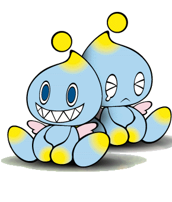 Especímenes de Chao demostrando distintas emociones para que no creas que son todos iguales.
El mundillo de los Chao es un mini-juego que viene a ser una especie de sub-saga dentro del mundo de Sonic. Como se dijo antes en este juego hay unas pequeñas criaturas llamadas Chao que forman parte del argumento (sin cumplir ninguna función aparente ¬¬). Estos bichos solo saben repetir su nombre y es todo lo que saben decir, ademas de lloriquear y de requerir cuidado constante, y deben ser entrenados por Sonic, Knuckles, o cualsea el personaje que encarne el jugador, ya que al parecer los Chao fueron creados para ocupar el rol que ocupan los marketinero entonces el juego terminó siendo del género de aventura como todos los de la saga. Al igual que los pokémon, los Chao nacen de huevos y solo saben decir su nombre, y los debes criar y entrenar pero no para que peleen por medallas, sino para que compitan en carreras por Emblemas (vaya diferencia ¬¬), así que si quieres recolectar todos los 180 Emblemas de la Liga Chao Sonic Adventure, debes jugar en la Carrera Chao (Chao Race) sí o sí obligadamente sin execpción aunque el juego de las carreritas te parezca una reverenda cagada y de hecho es una tremenda mierda porque ni siquiera puedes manejar a tu Chao y debes dejar que el CPU haga que tu Chao se mueva por sí solo y el hijo de puta siempre corre mas lento que sus adversarios y termina haciéndote perder la carrera, el emblema, la paciencia, las ganas de jugar (y las ganas de vivir).
Al igual que los Pokemon, los Chao vienen en distintos tipos y evolucionan adquiriendo nuevas formas y habilidades, pero para ello necesitan apretujar animalejos de los que Sonic y compañía recogen al destruír los Badniks de Eggman en las fases del juego, y a los animales rescatados se los debe llevar al Jardín Chao, de los cuales hay 3 en todo el juego (uno en cada campo de aventura) y que disponen de teletransportadores para trasladar huevos y Chao de un jardín a otro, pero no puedes usar el teletransportador para irte a la mierda y mandarte a mudar, que es lo que ya quisieras hacer para escapar de este mini-juego de mierda.
Info básica sobre los Chao
Los Chao como se dijo viven en el Jardín Chao, que sería una especie de reservorio natural, parque nacional, y paraíso fiscal animal donde los Chao viven en comodidad plena sin pagar tributo a nadie (o sea, anarquía) y pueden dedicarse a la gula y al goce sin que nadie los corra a patadas de ahí (aunque después de 2 min. en el Jardín Chao ya quisieras...). Hay tres jardines Chao, uno en el primer piso del Hotel Hilton de Station Square, otro en una cueva en Mystic Ruins, y otro en una isla cercana a donde se accidentó el Egg Carrier. En todos los jardines Chao hay dos huevos (yo también tengo dos huevos y no estoy en el Jardín Chao ¬¬) que eclosionan si eres paciente y esperas que acaben de incubarse... o si los arrebatas y los arrojas violentamente revoleandolos por el aire a que se estrellen y se rompan para dar a luz al crío mocoso de adentro (seguro eso es lo que haces siempre). Además hay 3 tipos de Huevos Chao ocultos que tras eclosionar dan a luz a unos Chao especiales (¿que? ¿Chao mas "especiales" de lo que ya son por defecto?). De estos Chao hay uno para cada Adventure Field: el Huevo del Chao Dorado de Station Square, el Huevo del Chao Plateado de Mystic Ruins, y el Huevo del Chao Negro del Egg Carrier. A todos los Chao debes alimentarlos con Royal Canin™ frutas que caen de las palmeras de cocoteros, que debes agitar para tratar de que caiga el coco en la cabeza del Chao y lo mate, pero no basta con alimentarlos, también debes sacarlos a cagar bajo un árbol darles entrenamiento en la piscina y demás áreas del Jardín Chao, y debes darles distintos animales para chingar que evolucionen, tal como veremos en la siguiente sección, pero seguro primero querrás encontrar los 3 huevos especiales así que toma, agasájate y luego seguimos con los tipos de Chao:
- Huevos Chao secretos
El Huevo Chao Dorado está en la tienda de antigüedades Gold & Silver Pawn Shop. Richard Harrison (AKA "El Viejo") mantiene el huevo presionando el botón para sostener la puerta abierta, así que debes colocar una roca en su lugar para poder irte con el huevo en mano.
El Huevo Chao Plateado está en un cubículo secreto detrás de la cascada del Cenote Sagrado de Chichén Itzá. Debes empujar la piedra que está ahí junto para que se accione el mecanismo que suelta al huevo en el agua.
El Huevo Chao Negro está dentro de la cárcel del Egg Carrier de donde Amy escapa. Debes presionar el botón de ahí junto para abrir la celda y robarle el huevo al Dr. Huevombre (Dr. Eggman, traducido al catalán^^).
Tipos de Chao
Para que los Chao evolucionen con distintos tipos de habilidades debes darles distintos animales para que follen, y aquí tenemos una tabla bonita para explicar los distintos tipos de Chao según sus cualidades, y los animales requeridos para que evolucionen en cada uno de los susodichos tipos, después de que evolucionen tras absorber su escencia fornicando con varios de ellos:
| Foto
|
Tipo
|
Descripción
|
Animales requeridos
|

|
Swim
|
Los Chao del tipo Nado tienen la función de nadar (sorprendente ¬¬). Son aquellos que evolucionan con capacidades natatorias natas, y sirven para ganar las carreras cuyo principal componente son las piscinas, estanques, y demás charcos de agua. Su aspecto al evolucionar recuerda al de un batracio (tipo Rana René de Plaza Sésamo), y suponemos que respiran por agallas para no ahogarse bajo el agua, pero definitivamente no tienen las agallas para ganar carreras por tierra o por aire, porque aunque en las piscinas se sienten "como pez en el agua" (literalmente) fuera del agua son "una verga" (no literalmente, por supuesto ¬¬).
|
* Foca
* Nutria
|
| 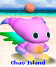
|
Fly
|
Los Chao del tipo Vuelo tienen la función de volar (y yo que creí que "Fly" se refería a "NiGHTS, el ya mencionado personaje Sonic Team para el Sega Saturn, en aquellos duros años en que Sonic estuvo ausente y Sanshiro Segata y Nights se turnaban para hacer sexo anal de mascotas de Sega de segunda selección en reemplazo de Sonic, pero definitivamente no tienen ni por asomo el talento del erizo para el sexo anal protagonismo de videojuegos, y por eso aunque Nights haga cameos en este juego y hasta le hagan tributo haciendo un Chao que vuele como él/ella, igual Sonic se come el protagonismo y por eso hay quienes creen que Sonic se la come mas que Nights.
|
* Loro
* Golondrina
* Pavo Real
|
| 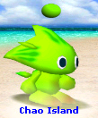
|
Run
|
Los Chao del tipo Correr tienen la función de hecharse una corrida imitar a Sonic y marchar a altas velocidades, aunque no llegan a igualar al erizo ni por asomo, o sea que Sonic se hecha una corrida mas rápida que los Chao (nótese el doble sentido de la frase^^). Son aquellos que evolucionan con capacidades de corredor nato, y sirven para ganar las carreras cuyo principal componente son las pistas, como caminos, senderos, y todo recorrido en suelo firme que obviamente en una carrera no podría faltar (que si no ya no serían carreras). Su aspecto al evolucionar recuerda a Sonic, pero solo porque tienen dos púas detrás de la cabeza, pero el color suele ser verde amarillo bilis así que a Sonic no se parecen un carajo (al menos todavía...).
|
* Ciervo
* Wallaby
|
| 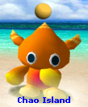
|
Power
|
Los Chao del tipo Poder tienen la función de hacer las veces de matones y fortachones, a pesar de que son tan enanos como los demás Chao. En eso se parecen a Knuckles, y por eso en general los Power Chao evolucionan de color rojo, pero nuevamente cagan al equidna en que sus Chao no tienen la forma parecida al Guardián, con púas similares a su cabello (cosa que a los Run Chao si le hicieron parecido a Sonic) sino que tienen cuernos como si fueran la Reina Sofía diablillos, aunque eso no significa que sean malos ni nada por el estilo (o sea, son tan idiotas como cualquier Chao). Los Power Chao son aquellos que evolucionan con capacidades de golpeador nato, y sirven para ganar las carreras cuyo principal componente son los muros, obstáculos, y cualquier circuito donde se requiera de escalar, golpear, y usar La Fuerza bruta. Su aspecto al evolucionar lamentablemente no es de rastafari como Knuckles, pero aún se parecen a él porque fuman hierba son rojillos (comunistas) y son los tipos duros de todo el circuito de carreras Chao (o sea, también son unos cabrones sociópatas).
|
* Gorila
* Elefante
* León
|

|
All
|
Algunos Chao pueden ser criados para balancear las distintas habilidades y así tener aptitudes para Todas las carreras en vez de ser expertos en algunas pero ser unos chafas en otras (¿o creías que existían los Chao del tipo "All"? ¬¬). Básicamente cualquier Chao puede tener mas de una habilidad según los animales que les des de coger comer, pero casi siempre va a predominar un tipo de habilidad sobre las demás, haciendo que un Chao sea muy bueno para una cosa, no tan bueno para otras cosas, malo para todo lo demás, o un bueno para nada que no sirve para una mierda porque es un completo inútil y un perfecto imbécil (sí, eso último definitivamente es lo mas probable). Para equilibrar las habilidades del Chao se le dan ansiolíticos distintos animales según cada caso, o bien se le pueden dar antidepresivos animales que elevan todas las habilidades por defecto... o ninguna en particular, y por eso los Chao que no tienen ninguna preferencia sexual en especial por alguna habilidad definida, pueden llegar a tener distintos aspectos sin que tengan una forma estandarizada, o puede que sigan siendo el mismo Chao pedorro color celeste con cabeza de cebolla (sí, de esos son la mayoría, y tampoco ganan una puta carrera!).
|
* Mofeta
* Topo
|
NOTA:Para que tu Chao gane experiencia sexual, debes meter a tu Chao en el fondo del culo en la Visual Memory Unit (la Memory Card del Dreamcast) y hacer jugar a tu Chao en un mini-game estilo Tamagochi llamado Chao Adventure, para que sea menos chafa en las carreras y consiga puntos de experiencia para evolucionar como los pokémon del Game Boy, y en caso de que Chao no gane las carreras al menos te podrás dar el gusto de borrar el archivo del Chao de la Memory Card y así matar a tu Chao para vengarte de él por su ineptitud.
Breve resumen de la trama y el argumento

|
CUIDADÍNEste artículo o sección contiene alerones feos. O sea
SPOILERS.
|
El juego presenta una historia rica y bien argumentada mostrada desde los diferentes puntos de vista de cada uno de los seis personajes seleccionables. Oficialmente solo Sonic está disponible desde el inicio y los demás personajes se van desbloqueando a medida que te los encuentras por el camino (el viejo arte de ir juntando pelotudos) pero técnincamente el argumento empieza desde la historia de Knuckles, ya que el es el último Echidna vivo y desde ahí inicia todo lo demás. La trama es muy complicada para entenderla (si acostumbras a ver Gran Hermano o Disney Channel no eres apto para entender este juego) pero reuniendo las piezas de la Master Emerald del rompecabezas que es el punto de vista de cada personaje, se junta todo y logramos entender el hilo completo del storyline de este juego, que va mas o menos así:
El equidna trosko protegiendo la Master Emerald antes de que se arme la hecatombe...
Knuckles se encuentra solo y tranquilo como siempre en su amada Angel Island, meditando mientras cuida la Master Emerald... bueno, en realidad por "meditando" nos referimos a que se está hechando una tremenda siesta y no tiene ni puta idea de si la Master Emerald corre peligro o no, pero conste que sí practica la Meditación mientras pasa su vida custodiando la gema ésa, nomás que como su vida es muy aburrida entonces se distrajo de la Meditación Ch'an y se quedó dormido. La noche estaba tormentosa como para amodorrarse, pero un fuerte ruido a vidrio roto despierta bruscamente a Knuckles... ¡¡¡LA MASTER EMERALD!!!.
Destrozada en mil pedazos, el Guardián no tiene tiempo para afligirse por la Esmeralda Maestra, ya que sobre los escombros esparcidos de la gema hay un ser humanoide de aspecto extraterrestre que parece ser el culpable de la destrucción de la esmeralda. Knuckles le lanza unos Hadokens de poca monta pero su ataque de misántropo ermitaño que es.
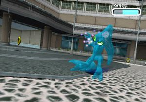 El dios extraterrestre hydrokinético sordomudo que anda suelto acechando la ciudad de Station Square por las noches (Brrr! que da
meio...)
En la ciudad de Station Square (sospechosamente abreviada SS) vemos a Sonic correteando por la noche para cometer vandalismos, tal como hacen todos los Cops llegan a la puerta del ayuntamiento y apuntan sus armas contra un sujeto que está ahí parado sin hacer nada (los polis siempre atacan a los indefensos) y le ordenan entregarse gritándole You are completed surrounded! Surrender yourself!, pero al no obtener respuesta le disparan a mansalva al tipo éste. Las balas le atraviesan como si nada y caen dispersas sin haber dañado a este bicho raro, por lo cual los cagones de la SSPD (Departamento de Policía de las SS) se van cagando de la escena del crimen y Sonic entra en acción. Al principio el erizo quiere ayudar a la víctima pero apenas ve que se trata de un monstruo (sí, sí, el mismo que atacó a Knuckles) empieza la pelea entre ellos. Este ser humanoide nos es revelado como Chaos 0, y Sonic lo vence a la primera pero el bastardo sin gloria se transforma en un charco de agua y escapa por la rejilla de la alcantarilla (se nota que no le tiene miedo a las cucarachas). Sonic se queda observando la rejilla de la cloaca y la cámara 1 nos muestra la azotea de un edificio lindero, donde está parado el Dr. Eggman observandolo todo y pensando en Sonic dice: You know nothing fool!. It's Chaos, the God of Destruction!, Muahahahahahaha!...
Al día siguiente Sonic va a descansar a la piscina del hotel (parece que ya se había olvidado de todo porque no le importaba un carajo) cuando levanta la vista y al mirar al cielo ve un Keiko lo persigue por atrás, Sonic sigue viaje hasta cruzar los acantilados y llegar a donde se estrelló el OVNi de Roswell el avión de Tails. El kitsune de dos colas salió ileso, y le explicó a Sonic que se estrelló porque estaba experimentando (eso suena a homoerotismo) con una Chaos Emerald para darle energía al avión (ah, menos mal, ahora está todo aclarado), así que Tails invita a Sonic a que vaya a su taller mecánico que está alejado de la ciudad en las Ruinas Místicas (mmm... lejos de la ciudad, en unas ruinas solitarias... otra vez suena algo gay). Sonic toma el metro (menos mal que no toma un "trolebús", que sino ahí si se confirmaban los rumores...) y llega a las Ruinas Místicas, pero cuando sube la colina para ir a la cima donde está la casa de Tails, el erizo se topa a medio camino con el Dr. Eggman, que ataca a Sonic y al zorrito con su Eggmobile (demasiado hexagonal, por cierto) ahora tunneado como Egg Hornet.
Obviamente el erizo y el kitsune lo cagan a trompadas a Robotnik, pero el viejo se sale con la suya y le roba la esmeralda a Tails (que el descuidado la llevaba en la mano exhibiéndola casi como diciendo "ven a quitarmelo Eggman!"). Robotnik coge a Tails la Esmeralda Chaos y en eso aparece un charco de agua del cual emerge Chaos, el susodicho monstruo que antes había peleado con Sonic la noche anterior (sí, ya sabemos quien es ¬¬) y Robotnik le da la esmeralda a Chaos y éste la absorbe y le crece el pene un brazo mas grande que el otro, con silicio dentro del brazo mas grande, en el cual podemos ver la esmeralda en su interior. Robotnik explica que Chaos se transforma cada que se como una polla esmeralda, y así se hace cada vez mas poderoso y cuando tenga las 7 Esferas del Dragón Esmeraldas del Caos será Perfecto, y destruirá Station Square tal como destruyó la Civilización Echidna tal como decían las tablas de piedra (que nunca aparecen en el juego y solo son mencionadas una vez por Eggman, pero suponemos que se refiere al Decálogo que Sinaí). Robotnik también dice que cuando Chaos tenga las 7 Esmeraldas Chaos (valga la redundancia) destruirá la Estación Cuadrada para edificar sobre sus ruinas una nueva ciudad tecnocrática a la que llamará Robotnikland (especie de Disneylandia pero los ratones y los patos estarán encerrados dentro de robots homicidas) que será la Capital Imperial del "Imperio Eggman" (AKA Eggman Empire; AKA EggmenschnReich) con el cual por fin logrará su ambicioso objetivo de dominar el mundo. Obviamente ante ésto Sonic & Tails ahora se percatan de que ya no pueden seguir vagueando jugando con avioncitos y tomando sol en la playa, porque deben buscar todas las 7 Esmeraldas Chaos antes de que Eggman las consiga, y por extensión deben también detener a Eggman y a su nuevo lacayo Chaos, el "Dios de la Destrucción" (que será muy Dios pero se pone bajo las órdenes de un simple mortal nomás para que lo soborne con piezas de joyería fina... que banalidad...).
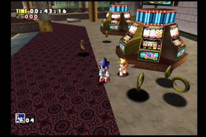 Mientras Knuckles trabajaba duro, Sonic y Tails perdían dinero en las tragamonedas del casino...
...Y quedaron tan pobres que fueron a caer al caño, y terminaron en un basurero.
coge carga a todos y se lleva las 3 piezas de la Master Emerald que le pertenecen. Después se va a Casinopolis a vender las piezas de esmeralda a cambio de fichas para las tragamonedas buscar otras 3 piezas de esmeralda que están en el casino como premio al mejor postor, y allí el Guardián recupera tres mas de sus preciadas joyas para luego marcharse sin haber jugado a los juegos del casino (nótese su intachable conducta de monje taoísta que no se distrae con las frivolidades del capitalismo) y se va de Casinopolis no sin antes cometer unos cuantos vandalismos reiterados destruyendo todo a su paso (para demostrar su convicción comunista, que odia el capitalismo) como destruyendo la estatua de Sonic que había en el casino (para demostrar que odia ser un segundón por debajo de Sonic, porque ya quisiera él ser el prota del juego). Chaos 2 es el doble de grande que Chaos 0, y por eso para vencerle se necesita alguien que tenga el doble de hombría que Sonic.
Rwanda. Después de una extenuante búsqueda de las esmeraldas en el casino (vamos... sabemos que estuviste jugando a las tragaperras) Knuckles va a "descansar" al Hotel Ryugyong (en el cual lo esperan en la habitación dos camareras que conoció en el casino) y en eso se topa con Robotnik que tiene algo brillante en las manos (¿se estuvo masturbando?). Knux cree que lo que Eggman lleva es un fragmento de esmeralda así que lo persigue y sube por el ascensor hasta el piso de arriba donde está el restaurante, pero lo que Eggman tenía en las manos era semen una Esmeralda Chaos, que obviamente se la da a Chaos para que se transforme en Chaos 2, ahora anabolizado y con forma de minotauro, pero Knuckles lo pone como camote y le exige respuestas al Dr. Eggman. El susodicho Doctor Mengele Robotnik le dice a Knuckles que los fragmentos de la Master Emerald los tienen Sonic y Tails, cosa obviamente falsa ya que Eggman había sido el que le robó la esmeralda a Sonic y Tails a la salida del casino y por eso estaban los dos tendidos en el suelo, pero Knuckles obviamente es engañado por el Dr. Eggman como un guiño para los fans, que recuerdan la época clásica cuando en Sonic 3 Knux es engañado por el gordo éste para que crea que el erizo y el zorro son malos, y luego descubre la verdad en Sonic & Knuckles, así que aquí los de SEGA quisieron usar el mismo truco dos veces para repetir el mismo argumento en este nuevo juego.
Con Knuckles si presionas 3 veces el botón de acción dará dos golpes que lanzan energía, y el tercer golpe será el
Comet Punch, un puñetazo cargado de
Ki. Para Sonic es mas fácil, nomás mueves el análogo para escapar y salir cagando
(impresionante la valentía del erizo azul).
Knuckles va a Mystic Ruins a cagarlos a trompadas a Sonic y Tails, pero primero pasa por Red Mountain para practicar alpinismo, paracaidismo, skysurfing, y demás deportes extremos de los X Games, pero todo sin usar cuerdas, ni arnés, ni paracaídas, ni nada que lo sustente (así de duro es). Luego de irse de la Montaña Roja (donde encontró otras 3 esmeraldas de puta casualidad) vuelve a las proximidades de la estación de tren de Mystic Ruins donde encuentra al erizo y al zorro y comienza a pelear con ellos (otro guiño para los fans, rememorando el épico enfrentamiento de Sonic VS Knuckles en el anterior juego de ambos) y durante el forcejeo de la pelea se taclean y Sonic pierde las esmeraldas que tenía en mano, momento en el cual Robotnik aprovecha para robársela y dársela por el culo a Chaos para transformarlo en Chaos 4.
El kitsune volador se carga al
delfín ése para demostrar que también tiene los
huevos bien puestos como Sonic & Knuckles.
Los tres mosqueteros animalejos pulgosos combinan fuerzas para vencer a Chaos 4, a quien lo enfrentan en un estanque ubicado en quien sabe qué lugar de Mystic Ruins, se presume que sería en el Cenote Sagrado donde está el Huevo Chao, pero como vemos el escenario donde combaten es distinto, con hojas gigantes flotando, así que puede que sea un motel perseguir al Dr. Robotnik, Knuckles por su parte decide irse a un puticlub buscar los fragmentos de la Master Emerald que aún le falta recuperar.
Éste es el avión de Sonic & Tails...

...Y éste sería el avión de Eggman.
Sonic lleva a Tails a su casa donde follan Tails tiene su taller y una improvizada pista de lanzamiento desde donde despega su avión biplano Tornado, el cual hemos visto desde Sonic 2 pero ahora lo rediseñaron con el escudo de armas de Tails (dos colas entrelazadas, obviamente) y ahora las alas ya no son color chapa y también están pintadas de rojo (porque Tails es Maoísta). Sonic salta sobre el ala del Tornado justo cuando Tails despega como para darle mas acción a la escena, que hubiera quedado mas cutre si solo se hubiera subido al avión antes del despegue aunque eso es lo que debe hacerse porque no es muy seguro saltar hacia un avión en movimiento teniendo por debajo el precipicio del risco donde están las aguas del océano, y para colmo Sonic no sabe nadar, así que fue muy imprudente al hacer ésto (o sea, "Niños, no intenten esto en casa"). El erizo y el zorro remontan vuelo con el Tornado y persiguen el Egg Carrier de Eggman, que fue la nave en la cual el susodicho doctor escapó anteriormente luego de la pelea con Chaos (y por si no lo notaron también era la misteriosa nave que sobrevolaba Angel Island en la intro de Knuckles, ya que como vimos fue Eggman el que fue hasta la susodicha isla a liberar a Chaos, destrozando la Master Emerald como consecuencia). Así da comienzo la Sky Chase, donde apreciamos que la Persecución en el Cielo es mucho mas realista que la homónima y predecesora versión de 16 BITs del Sonic 2, pero el Tornado sucumbe ante el potente rayo laser del Egg Carrier causando la caída de Sonic & Tails, que se separan por primera vez en sus vidas (pero no firmaron el divorcio, así que los volveremos a ver juntos otra vez). Sonic cae en la arena de la playa durante el atardecer, así que camina hasta la ciudad donde encuentra a Amy, que casualmente había estado llendo de compras por la mañana añorando los viejos tiempos recordados con mucha nostalgia cuando durante Sonic CD el erizo rescató a la chiquilla ésta de las garras de Metal Sonic, y ahora en cambio Amy ya no tiene la adrenalina de ser el objeto de deseo de un robot violador y rechazada por su amado erizo supersónico, ya que en contraste lo mas emocionante que le ha venido pasando es haber ido a comprar verduras por la mañana y toparse con un pajarraco que le cagó cayó en la cabeza y que anda buscando a su familia (otros pajeros pájaros como él). Así las cosas, Amy le pide a Sonic matrimonio que la ayude a encontrar a la familia del pajarito, el cual sigue a Amy todo el tiempo (otro guiño para los fans, esta vez rememorando el último juego de Sega Genesis: Sonic 3D Blast, donde unos pajeros pájaros de mierda seguían a Sonic durante el juego). Sonic no tiene ni ganas de cuidar al pajarraco, y menos soportar a Amy, pero ella lo lleva de prepo al Twinkle Park donde había una promoción especial que decía que las perejas bonitas entraban gratis, algo muy discriminativo por cierto, ¿que entonces las parejas de gente fea tienen que pagar pero a los lindos los dejan pasar gratis?, eso es muy neonazi, y no sorprende, ya que al cabo el parque de diversiones está en la ciudad de Station Square (S.S.).
Entretanto, Tails había caído en la selva donde también se puso nostálgico y medio maricón llorón recordando que todo tiempo pasado fue mejor, cuando antaño andaba tristón y decaído cuando era pequeño, hasta que por esas casualidades de la vida se encontró con Sonic y desde entonces se hicieron una paja amigos para siempre. Ahora Tails por primera vez estaba distanciado de Sonic y no quería que él ande saliendo con Amy (parece que Tails está celosillo) así que Tails se predispuso a reencontrarse con Sonic, y para eso debe encontrar otra Chaos Emerald para usarla como fuente de energía para reparar el Tornado, y su búsqueda lo lleva a una cueva llena de arena que conduce a un desierto que conocemos como Sand Hill, donde Tails se pone a practicar Sandboard para demostrarse a sí mismo que sí es capaz de protagonizar sus propias aventuras sin pasarse la vida siendo el lameculo de Sonic.
Paralelamente, Knuckles continúa con su búsqueda de los fragmentos de la Master Emerald dispersados por todas partes, lo que lo lleva a viajar por todas partes hasta encontrar dos estatuillas antiguas de deidades Echidnas, una dorada y otra plateada, las cuales lleva hasta la jungla de Mystic Ruins y las coloca en la viaje astral, ni tampoco está en la remota edad antigua cuando la Civilización Echidna estaba en su apogeo durante el período clásico; ahora Knuckles estaba nuevamente en Angel Island, que todavía estaba en el suelo porque las piezas de la Master Emerald que encontró solo la restauró en un 80%, pero al menos hizo progresos y volvió al mundo real, lo que indica que todo el anterior viaje por el Plano Astral durante el cual vió el Registro Akáshico para vivenciar el pasado de la Civilización Echidna, en realidad solo habían sido alucinaciones producidas por el té de Floripondios que se había tomado junto con una infusión de Ayahuasca y algunos Peyote durante 3 días, y pasar mucho tiempo entre la hierba de la selva no ayuda mucho que digamos...
El polígono de tiro mola, pero tiene fallas: los calcetines de Knuckles deberían ser verdes y sus zapatos deberían tener los talones de color rojo (observaciones detallistas que solo un
nerd sabe hacer).
concentración entrenamiento en su base secreta Final Egg, donde Gamma practica tácticas homicidas del Falange anticomunista, antianarquista, antisocialista, antimarxista, antihumanista, y antinaturalista del Ejército del Eggmenschreich. La fortaleza alada Egg Carrier despega con todos abordo, y el Dr. Eggman se anuncia a sí mismo con gran fanfárrea para dar nuevas misiones a su tropa de asalto élite conformada por sus droides de combate E-102 Gamma, E-103 Delta, E-104 Epsilon y E-105 Zeta, a los que les ordena dar captura a una ranita llamada Froggy (se mataron con el nombre), ya que como dijimos estos fachas son antinaturalistas y destructores de la René han desaparecido, así que el gato con sombrero sale en busca del anfibio baboso y emprende un viaje que lo lleva hasta la ciudad por primera vez en la vida. Big se pone a pescar a Froggy, que se esconde bajo el agua en Twinkle Park, Ice Cap, y Emerald Coast, pero siempre se le escapa (parece que hasta el sapito está hinchado las pelotas de ver pescar a Big). En Emerald Coast E-102 Gamma captura a Froggy y se lo lleva a la parrilla Robotnik abordo del Egg Carrier, donde Herr Doktor felicita a Gamma y despotrica contra la horda de inútiles que le trajeron cualquier sapo de mierda pero no el que tenía la esmeralda metida en el culo. A todo esto Sonic sale del Twinkle Park (al fin logró escaparse de Amy) pero Amy lo persigue porque no quiere perder a su Sonic (carajo! que pendeja molesta!) pero por suerte para él, Amy es secuestrada por los narcos el androide violador ZERO, para luego ser abducida por los Grises el Egg Carrier. marea roja porque cree que son los
voyeurista! querías verlo con los circuitos al desnudo!). Allí Gamma observa el cruel e inhumano trato que Eggman tiene incluso para con sus propios robots, que aunque estaba mejorando a E-101 igual lo trataba para la mierda. Ya en el calabozo donde mantenían prisionera a Amy (presuntamente para posteriores fetiches sexuales
sadomasoquistas de Robotnik) Gamma le ordena a Amy que le entregue
el culo al pajarillo que lleva de mascota. Ella se rehusa y se compadece de Gamma por no tener ni un poco de
sexo amor en su
corazón (que tampoco tiene corazón, porque es un androide :P). Gamma se compadece de Amy por no tener a Sonic para chingar, así que la deja libre. Mientras Amy se entretiene
masturbándose jugando al "Hedgehog Hammer", Gamma recibe una nueva misión por parte de Eggman: ir a matar al recién arribado de polizón, Sonic el erizo. Ya en la cubierta principal donde estaba Sonic, E-102 Gamma lo ataca y está a punto de rostizar al erizo cuando Amy interfiere una vez mas y
Sonic le pide a Gamma que lo mate lo antes posible! le dice a Gamma que no lo mate, que no debe hacerle caso a Eggman porque ahora ella y Gamma serán amigos, y los amigos siempre deben ayudarse y por eso ella ayudará siempre a Sonic. Gamma se conmueve al oir estas palabras, creyendo que Amy es una chica muy dulce (se nota que no la conoce) así que le perdona la vida a Sonic y se caga en la órden que le dio Robotnik.

Tikal & Pachacamac filosofando sobre el destino de la Civilización Antigua, mientras Knuckles observa desde lejos (está demasiado porreado como para acercarse).
A todo esto, Knuckles ya había despertado de las ochocientasmil veces que estuvo teniendo alucinaciones que le hacían pegarse un tremendo "viaje astral" al pasado donde veía a Tikal y a sus ancestros, pero ahora que los efectos de la bola de cristal, o será que Knuckles se sigue dando "toques" con el Proyección Astral que lo llevan nuevamente al pasado donde presencia como el Altar de la Master Emerald ardía en llamas, y allí se encontraba nuevamente Tikal The Echidna. Knuckles se acerca a Tikal e intenta tirársela hablar con ella, pero en ese momento ella invoca los poderes de la Master Emerald y el resplandor de la susodicha envía a Knuckles nuevamente al plano terrenal del tiempo presente (nada mas frustrante que despertar de un sueño erótico antes de poder tirarte a la putilla). Fue después de ésto que Knuckles se coló en el Egg Carrier antes de su despegue, y ya durante el vuelo tuvo que recorrer la Cubierta del Cielo entrando desde la piscina privada de Eggman, y mientras Knux recuperaba los últimos 3 fragmentos de la Master Emerald el erizo azul se las veía negras con Gamma, que como dijimos al final fue Amy la que le salvó las papas a Sonic (nada mas humillante que ser rescatado por una chiquilla odiosa). Para cuando Knuckles salió del Sky Deck, la nave ya estaba volando entre las nubes de tormenta y Sonic ya estaba en el "Ojo" central de la cubierta de la nave, donde Knuckles ve un resplandor enceguecedor. La luz del destello era nada menos que Chaos, que ahora ya era casi perfecto tras conseguir 6 de las 7 Chaos Emeralds, así que atacó a Sonic con fiereza mientras Eggman lo bombardeaba desde el aire, pero el cagón de Eggman escapa así que Sonic lo persigue, dejando a Chaos 6 en manos de Knuckles que es el que finalmente se lo carga y le raja todo lo que se llama cara (y el culo también se lo rajó), quedándose con las 6 Chaos Emeralds que tenía el monstruo éste, y que ahora las había perdido tras sucumbir a manos del Guardián de la Master Emerald.
El marica de Big nomás
cogió a la rana y se fué, y el cagón de Sonic se escapó en mitad de la batalla; así que el Guardián Knuckles fue el que finalmente destrozó a éste bestia (y aún así SEGA no le quiere dar el reconocimiento que se merece U_U).
Seguido a ésto vemos que el Egg Carrier comienza a perder altitud, cosa que ya venía en declibe desde antes pero como Sonic & Knuckles estaban muy ocupados buscando esmeraldas y peleando contra Chaos entonces no se dieron cuenta, en cambio los demás que estaban a bordo y que no hacían nada nomás de pura hueva que les daba, fueron los primeros en advertir la inminente caída del Egg carrier y por eso se fueron de ahí antes que nadie (soldado que dispara sirve pa' otra guerra). El primero de estos cagones fue Big, que el gato éste se había escabullido en el portaaviones de Eggman siguiendo los pasos de Gamma cuando éste le arrebató el sapo en la playa. Así fue que Big presenció la transformación de Chaos 6 abordo del Egg Carrier, pero el cagón no se quedó a pelear contra él, ni bien pescó a Froggy se lo llevó y Sonic se quedó recibiendo ostias de Chaos. Lo peor es que fue Sonic el que con buenas intenciones le recomendó a Big que escapara para salvarse y que total el erizo se encargaría de todo, ¡y el ingrato malnacido de Big le robó el avión a Sonic para escaparse, dejando varado al erizo sin poder salir del portaaviones, y atrapado con semejante monstruo como Chaos 6!. Cosas que pasan, y así como el gato hijo de puta lo cagó a Sonic y le robó el Tornado 2, Gamma fue otro que escapó de la caída del Egg Carrier justo cuando estaba cayendo, luego de que Amy le llenara la cabeza con mariconadas de niñita blandengue, que había que ser buenos amigos, que no mate mas a Sonic ni a nadie, que deje libre al pajarito, en fin... con la influencia de Amy Gamma pasó de ser un soldado implacable a una mariquita con sentimientos y emociones de quinceañera indispuesta, así que escapó del Egg Carrier y violó a Amy las Tres Leyes de la Robótica de Isaac Asimov, rebelándose contra su creador el Dr. Robotnik y teniendo por nueva misión el liberar a todos los pajarillos como el que tenía Amy cuando la dejó escapar de prisión a cambio de una mamada. En tanto el Egg Carrier perdía mas y mas altitud, ya estaba por caer en picada y como Knuckles ya tenía todas las piezas de la Master Emerald entonces escapó de ahí volando como él sabe hacer, usando la misma técnica de vuelo a propulsión por Ki como hacen Goku, Vegeta, y demas guerreros de Dragon Ball. A todo ésto la histérica de Amy siempre se sale con la suya sin esforzarse demasiado: escapó de prisión porque le pidió a Gamma que le abra la verja, y escapó del Egg Carrier colapsando porque Sonic le pidió a Tails que la lleve volando de regreso a Station Square, así que Tails usó sus dos colas para volar como sabe hacer y se llevó a Amy a la cama a la ciudad, pero la muy ingrata no fue capaz de agradecerle dándole una chupada ni haciéndole una paja, porque ella quiere reservarse toda la diversión para Sonic, así que como Tails no obtuvo recompensa por salvar a Amy entonces la dejó sola en la ciudad y se fue a la mierda (probablemente a jugar al solitario). ¿Y con Sonic que pasó?, simple, se le va la vida persiguiendo el Eggmobile del Dr. Robotnik como viene haciendo desde 1991, así que se lanza fuera del Egg Carrier en un salto suicida sin paracaídas nomás para perseguir al huevón de Robotnik, y así es como por las consecuentes casualidades de la vida todos y cada uno de los personajes (incluído el hijo de puta de Eggman) se salvan de la inexorable explosión del Portaaviones Huevo.
La nave cae en el océano pero el erizo aterriza en la jungla de Mystic Ruins, y sale increíblemente ileso pese a darse contra los matorrales y arboledas espesas que cubren toda la selva, y aunque sufrió una caída de 10.000 metros de altura contra la selva vírgen igual salió sin un solo raspón (nótese el realismo con el que Sega elabora sus videojuegos). Robotnik también sobrevivió porque obviamente voló con su Eggmobile, y refugiado en la ahora inútil nave Egg Carrier estrellada en el mar, el Dr. Huevón lanza un misil ojiva nuclear a modo de Plan B, cosa que si no destruye Station Square con Chaos o el Egg Carrier, al menos los mata a todos con 100000 Kilotones de radioactivo causando un holocausto nuclear como el que USA e Israel planean lanzar contra Norcorea e Irán. Sonic trata de no perderle el rastro a Eggman (que como vemos ya le perdió el rastro después de su salto suicida) y se escabulle en la selva para tratar de encontrarlo. Tails queda solo y se da cuenta de que ahora que no está Sonic debe ser él el que se ponga los pantalones y se haga hombre, así que Tails pierde la virginidad demuestra que sí tiene huevos después de todo, y se propone interceptar a Robotnik y a su misil nuclear. Mientras E-102 Gamma emprende una cruzada para "liberar" a sus "hermanos" (lo que significa matarlos a todos para que los pajarillos dentro de los Badniks escapen... sádico pero ecológico), y Amy corre como la puta histérica que es tratando de encontrar a su Sonic para follar con él, sin importarle los graves problemas que están atravezando los demás, como la crisis de los misiles cubanos nucleares, y el grave hecho de que Eggman sigue vivito y culeando coleando, continuando con sus planes para destruir el mundo.
Por otro lado, Knuckles vuelve a Angel Island luego de irse volando del Egg Carrier con las últimas tres piezas de la Esmeralda Maestra, así que llega al Altar y se casa con Tikal restaura la Master Emerald al completo, y como era de suponer ahora con la Masutā Emerarudo 100% restaurada, la Isla del Angel recupera su fuente de poder y vuelve a reflotar para remontar vuelo y salir volando directo al Cielo, retornando a las alturas donde nadie puede verla ni oírla, y así Knuckles consigue su objetivo de seguir con su inamovible vida de custodiar la Master Emerald forever mientras se paje viendo porno de asiáticas que compró mientras estaba en la ciudad convive en paz mental con la naturaleza y consigo mismo, al mejor estilo taoísta, cheondoísta, comunista, anarquista, etc.
Sin embargo Sonic & Tails no pueden darse el lujo de esa paz porque siguen inmersos en toda la mierda en que la sociedad capitalista los metió, y por eso Tails persigue a Eggman por la Autopista de Velocidad hasta dar con el misil estrellado, que gracias a Dios no explotó porque sino todo el mundo habría muerto (y no hubieramos podido ver el final de este juego). Tails llega a donde el misil y lo desarma pese a no tener ni una caja de herramientas, pero logra desactivarlo y salvar a la ciudad, porque si esperamos que el cuerpo de policía de la SSPD salve la ciudad entonces mas bien ya estaríamos todos muertos. Sin embargo Robotnik escapa a su base secreta, pero Sonic no puede encontrarla todavía porque se metió en problemas: comió de los mismos hongos alucinógenos que había ingerido Knuckles, y ahora el erizo también tiene visiones psicotrópicas de una hitodama que le habla y lo conduce por un viaje místico dentro de la Pirámide de Teotihuacán que estuvo sellada por mas de 3.000 años, pero cuya entrada con forma de Serpiente Emplumada se abre sin motivo aparente solo para que Sonic entre.
Sonic entra a la pirámide que suponemos es la tumba de Janaab' Pakal profecías mayas de civilización provocando el escépticos dirán que solo es un mural que representa la mitología de una civilización extinta, que no hay que preocuparse porque ahora ya no tenemos casas de piedra basadas en la OTAN, así que en nuestros tiempos sí estamos mas cerca de la destrucción que nunca, y tenemos mucho mas que temer de lo que hubieran temido los antiguos mayas.
Como sea, Sonic sufre otro episodio de delirio místico como los que padecía Knuckles, y ahora se encuentra en el Plano Astral, atestiguando el pasado mediante la conexión con el registro Akáshico justo como le había ocurrido al equidna (si te juntas con Troya pero sin Brad Pitt). El erizo vuelve al presente, sale de la neón haciendo señales en el cielo, así que como vemos la base de Eggman tiene de "secreta" lo que el vaticano tiene de "santa sede". Lo peor de todo es que Amy reaparece y se mete un pepino en la concha en la base Final Egg para chingar con Sonic (como vemos es muy imprudente si piensa que una base militar enemiga es lugar apropiado para tener sexo seguro) pero por suerte para Sonic trajo protección ambos toman caminos diferentes y se desencuentran (el erizo arriesgó su vida pasando por el camino mas difícil lleno de trampas mortales con tal de no cruzarse con Amy).

E-102 γ cumple
misiones para Eggman pero después lo traiciona y encarna su propia "misión" para "
liberar" a sus "
hermanos" robots.
Mientras Amy, la niña de la mochila el erizo azul escapa del robot violador ZERO (sí, todavía se la quiere tirar), E-102 Gamma continúa con su nueva misión luego de haberse reprogramado a sí mismo. Ahora debe exterminar a sus Gestapo, E-101 Beta. Gamma recuerda que Beta estaba en mantenimiento dentro del Egg Carrier, así que luego de exterminar a Zeta va al centro del derribado portaaviones y por esas casualidades de la vida justo pasa volando E-101 Beta delante de sus ojos, que ahora se llama E-101 mkII porque se hizo una serie de cirugías plásticas reconstructivas para cambiar de identidad.
Oskar Schindler, así que SEGA le sigue plagiando guiones a Spielberg). Un androide muere, un animal vive; un trato justo. Así las cosas, Amy llega al centro del derribado Egg Carrier (que casualidad que todos vayan a parar ahí...) y busca desesperada
una verga a la familia de Birdie (el pajarito ¬¬) y al ver a papi y mami pajarones se pone feliz de reencontrar al pajarito pequeñito con su familia (la primera vez que Amy hace algo útil en su vida), pero reaparece en escena el androide ZERO, que intenta hecharle un polvo a Amy a como de lugar. Amy se calienta (en sentido de enfado, no en sentido de excitación sexual) y saca su enorme
vibrador martillo
Chipote Chillón Piko Piko Hammer, y le da ostias a ZERO hasta acorralarlo contra las cuerdas y golpearlo tres veces en su cerebro positrónico, que por esas casualidades de la vida también servía como botón de autodestrucción del robot, así que ZERO explota en mil pedazos, pero era el único que no tenía animalillo adentro, así que Amy se queda con ganas de apretujar un animalito indefenso, por lo que vuelve a pensar en Sonic y se propone a sí misma hacer que Sonic la respete algún día (ni que fuera que no la respeta, de hecho la respeta tanto que ni siquiera se atreve a tocarla ni con una rama!).
Finalmente, Sonic atravieza Final Egg luego de perder a Amy (a propósito) y llegando al núcleo de la base va a por Eggman y lo reta a un duelo final contra el Eggmobile ahora tunneado como Egg Viper. Ya antes Tails le había dado ostias al Egg Walker, así que era obvio que Sonic iba a vencer al Egg Viper, porque ni modo que hicieran que Tails superara a Sonic, así que la victoria estaba asegurada. Después de que Eggman se estrella dentro de su propia base en un ataque Kamikaze fallido contra Sonic (hay que ser pelot* * * ) el erizo da por muerto a su archienemigo y da por concluída su misión, tomandose un merecido descanso, cosa que ya hacía desde antes de luchar contra Eggman, o sea que vive de juerga todo el día y andará de vago por el resto de su vida.
...Pero el descanso es breve, porque resulta que mientras el Dr. Eggman reaparece refunfuñando en Mystic Ruins, en eso se topa con un charco de agua, pero luego la pantalla se pone negra y oímos gritar a Eggman, que parece que fue atacado por un simple charco de agua (ya te podrás imaginar de quien se trata...). Acto seguido vemos que Angel Island vuelve a caer al océano pese a que la Master Emerald está en el Altar, y Knuckles se pregunta si las 6 Chaos Emeralds que trajo consigo tendrán algo que ver, y que le preguntará a Sonic para que lo aconseje, lo cual es estúpido ya que Knuckles es el Guardián y el último heredero de la Civilización Echidna, así que obviamente él es el que mas sabe sobre las Chaos Emeralds y no Sonic, ya que el erizo solo sabe juntarlas para transformarse en Super Sonic pero no tiene idea de como funcionan los poderes de las esmeraldas ni cual es su historia, así que es absurdo que Knuckles le vaya a pedir consejo a Sonic, mas bien sería al revés, pero los lammers que hicieron el juego escribieron el guión para que sea Knuckles el que le vaya a pedir consejo a Sonic, para así no opacar el protagonismo del erizo azul. Luego de que la Isla del Angel vuelve a caer en Mystic Ruins, es Eggman el que va a por Knuckles, sabiendo que él tiene las otras 6 Chaos Emeralds, y aterrado viene y le dice "Esto es terrible!! C-Chaos es..." y Knuckles le pregunta "¿Es qué?", pensando que Eggman se refiere a que Chaos es gay, pero antes de que Robotnik le responda, en eso se aparece Chaos y los ataca sexualmente a ambos, obviamente para robar las 6 Chaos Emeralds de Knuckles. Luego vemos que Sonic está tirado bajo un árbol bostezando de la hueva que le pegó y de lo vago que es, y en eso se aparece Tails que viene corriendo agitado (es asmático, como todos los nerds) y le avisa a Sonic que Angel Island ha vuelto a caer (ni que a Sonic le importara demasiado). Juntos van a un sauna Angel Island y ven a Knuckles y a Eggman tirados en el suelo, y Knuckles les dice a Sonic y Tails que Chaos sigue vivo y se tiró a Eggman que le robó las Chaos Emeralds y la virginidad a Eggman. En eso el Dr. Eggman se levanta y dice "Aaaarggggh! (le duele el culo después de lo que le hizo Chaos) He's not gonna get away with this!" ("No se saldrá con la suya", lo mismo que le decía a Sonic ahora va para Chaos). Robotnik se sube a su Huevomovil y se va a su fortaleza oculta en la selva (a ponerse hielo ahí atrás). Knuckles le dice a Sonic que Chaos está mas fiero que nunca, y que irá por la última Chaos Emerald, y si la consigue tendrá las 7 y la muerte vendrá a traer el fin del mundo... En eso reaparece la Hitodama del espíritu de Tikal y lo vuelve a mandar a Sonic a la mierda al Plano Astral donde vuelve a ver el Registro Akáshico de lo ocurrido antiguamente en la Civilización Echidna, donde observa el principio del fin del imperio, observando el Altar de la Master Emerald ardiendo en llamas y como el Rey Pachacamac y su ejército de Guerreros Echidnas intentan tomar por la fuerza las 7 Chaos Emeralds para conquistar los pueblos vecinos y unificar todo el mundo bajo una misma Ley. La hija del jefe de la tribu, Tikal The Echidna, se interpone entre el Santuario de la Master Emerald y los soldados clon del Knuckles' Klan para evitar que vayan a coger a los pequeños Chao las Esmeraldas Chaos, y les dice que la codicia es nuestro enemigo y que no deben usar el poder de las esmeraldas para dominar a las demás naciones. Pachacamac dice que el poder de las esmeraldas es poder para el pueblo de los equidnas, y ese también es el pueblo de Tikal, así que ella no debe interponerse entre los planes de conquista mundial del Rey Pachacamac The Echidna. Tikal se rehúsa a permitir que su padre use las esmeraldas con fines bélicos, así que Pachacamac ordena a sus tropas que la ataquen. Los soldados equidnas del Knuckles' Klan acometen contra Tikal The Echidna y contra las pequeñas criaturas Chao que estaban junto a ella, siendo todos brutalmente masacrados y vejados. La masacre de los pequeños Chao enfurece a su dios protector, Chaos, que absorbe las 7 Chaos Emeralds justo cuando los soldados echidnas llegaban al Altar, así que ahí Chaos entra en Furia Berserker y desata su máximo poder exterminándolos a todos. Sonic no puede hacer mas que observar el pasado sin interferir, sino hasta que es demasiado tarde y se acerca a Tikal para ver si sigue viva. Tikal se levanta, por lo que no ha muerto pese a haber sido apaleada y ultrajada por todo el pelotón de robustos equidnas guerreros (la habrán dejado tambaleando y con la lengua afuera...) pero Tikal no le responde a Sonic porque están virtualmente en períodos menstruales de tiempo anacrónicos. Sonic solo puede seguir de espectador sin interferir, y ve a Tikal usando la poca fuerza que le queda para lanzar la técnica Mafūba y encerrar a Chaos dentro de la Master Emerald para evitar que siga destruyendo el mundo, pero accidentalmente ella también queda encerrada junto con Chaos dentro de la Master Emerald, para hacerle felaciones hasta el fin de los tiempos y evitar que escape, y así fue como sus almas quedaron selladas en forma de 69 dentro de la Master Emerald hasta que miles de años después Robotnik los liberó para diseminar el mal en el mundo...
Pasados los efectos del LSD, Sonic vuelve en sí y Tails le pregunta que qué le pasó (al haberle visto la cara de porreado al erizo mientras andaba "de viaje" por las alucinaciones anteriormente descritas). Sonic dice que nomás se quedó "en blanco" (buena excusa para no admitir que se pegó un "viaje astral") y ambos van a buscar la última Chaos Emerald antes de que Chaos la consiga y desate la devastación como había sucedido antiguamente hace eones. El erizo y el zorro llegan a la selva de Mystic Ruins y van en busca de la Chaos Emerald que había quedado en el Tornado 2 (que Big había robado para volver a su casa) y justo en eso la Chaos Emerald le es arrebatada por un enorme chorro de lefa agua, así que contando las 6 que le robó a Knuckles y la última que les robó a Sonic y Tails, podemos decir que Chaos ya tiene las 7 Chaos Emeralds, y eso es muy mal presagio; tan malo que solo nos queda esperar el desastre...
La gente de Station Square caminaba tranquila durante un día soleado, cuando en derrepente las aguas del drenaje se agitan... se agitan demasiado... Chorro tras chorro de kilolitros de agua a presión emergen de las alcantarillas, desquebrajan el pavimento, destrozan los edificios, y en un abrir y cerrar de ojos una tormenta tsunami, y el cóctel mortal de catastróficas proporciones bíblicas dejan a Station Square sumida en la devastación (eso pasa porque el Alcalde y los demás políticos corruptos del Ayuntamiento dilapidaron los fondos del presupuesto para consesionar la construcción de un casino y un parque de diversiones, en vez de invertir en la actualización y mejora del sistema hídrico y la infraestructura de la ciudad).
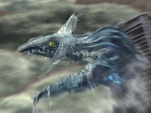 Godzilla Perfect Chaos saliendo del edificio de oficinas de
SEGA para destruír
Neo Tokyo.
Mientras los pocos sobrevivientes gritan desesperados, la camara de un aficionado filma el momento exacto en que el lavado de cerebro, en el doblaje al inglés fueron reemplazados por GO SONIC!!!', con acento yanki pero no por eso le quita el efecto al juego. Como sea, con el apoyo de sus amigos (y Big) y de los ciudadanos de Station Square (y Sanshiro Segata); las "buenas vibras" buenrollistas cargan de energía positiva a las 7 Chaos Emeralds de Sonic, restaurando su poder con armonía <font. color="#0000FF">neo</font>hippie que le permite a Sonic transformarse en Super Sonic.
Carajo, joder que es grande el hijo de puta (pero no da tanto miedo como daba en la escena del videíto donde destroza el edificio ¬¬).
arremete contra Perfect Chaos, en una sinuosa pista inundada por agua y conformada por los restos de la ciudad corroída y derrumbada en pedazos. Super Sonic flota sobre la superficie del agua (
malrollista de Perfect Chaos es neutralizada por la energía
buenrollista de Super Sonic (otra forma de decir que después de 6 golpes en la cabeza queda K.O.) y Chaos vuelve a la normalidad a su forma original de humanoide sordomudo de poco mas de un metro de altura. Tikal aparece y le dice a Chaos que ya no debe estar cabreado, que los pequeños Chao que él cuidaba habían sobrevivido y desde hace eones conviven en paz con los humanos (carajo pendeja! le hubieras dicho eso antes de que se transforme en un Dragón Gigantesco y destruyera el mundo!), así que ahora que Chaos ha vuelto a la normalidad y la armonía ha regresado, la vida debe seguir su curso y Chaos & Tikal se
casan elevan por los aires y ascienden a los Cielos desvaneciéndose al regresar al Plano Astral, mientras que los Chao vivirán pacíficamente en los llamados Jardín Chao, y Sonic también ha vuelto a la normalidad, por lo que al ver a Robotnik escapando en su Egg-O-Matic decide correr y seguirlo, continuando así con sus aventuras mientras dejó a Tails hablando solo, a Knuckles sin haberlo dejado transformarse en
Supersaiyajin como los fans esperaban, a Amy sin haber perdido la virginidad con Sonic como ella quería, a Big sin saber que hacer ahí tan descolocado en la trama del juego, y a los mas de tres millones de víctimas del Tsunami de Station Square en una ciudad devastada que necesita ayuda humanitaria urgentemente, pero el erizo prefirió hacerse el héroe y corretear tras el Huevón de Eggman.
Crítica
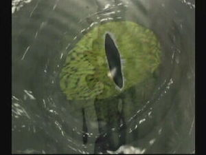 Nunca hay que dejarse llevar por primeras impresiones, así que analizaremos este juego con un ojo crítico.
La recepción del público y de los críticos especializados fue arrolladoramente positiva: GamePro le dió a Sonic Adventure su máxima calificación: 5/5, argumentando que "Sonic es divertido, rápido, y una gran razón para comprar una Dreamcast", consagrándolo como "uno de los 7 mejores juegos de plataformas de la historia" (casualmente 7 es el número de Esmeraldas Chaos, así que si los otros 6 también son juegos de Sonic entonces puede que la mano de SEGA esté detrás de la revista GamePro). Mientras que GameSpot & GameSpy le dieron mas del 90% de aprobación, GameRankings le dió un 80%, pero lo catalogó dentro del selecto club de los Sega All Stars, que son los mas grandes "Hits" del Sega Dreamcast (o sea que éstos también cobraron la coima de Sega). Por otro lado la revista Club Nintendo le dio un 0% de aprobación, mientras que la revista Todo Sega fue la única que le dió 100% de aprobación completa (ya vemos como ningún medio de prensa dice la verdad objetiva y todos son tergiversadores que siempre buscan sesgar la noticia en favor de sus respectivos intereses).
Los gráficos en
3D están muy bien logrados. Nótese la captura de movimiento en la que vemos a Knuckles olfateando sus genitales cuando caía rodando desde el piso superior del casino (sí, congelamos la imagen solo para ver a un animal oliéndose la entrepierna).
Mas allá de la diversidad de los críticos (tanto los que fueron sobornados por Sega como los que fueron sobornados por Nintendo) la opinión de los jugadores & jugadoras fue relevantemente positiva, ya que consideraron que el salto de lefa Sonic de 2D a 3D fue realmente bien logrado y hasta mas positivo de lo que fue la misma transición de Mario al poligonado y tosco Super Mario 64, cosa que era uno de los objetivos a lograr, y por eso Sega creó la consola Dreamcast para superar en un 200% a la hasta entonces tostadora de pan de 64 Bits de Noentiendo. Los gráficos de Sonic Adventure son impresionantes y la jugabilidad del erizo es impecable, principalmente por los efectos alucinógenosnantes de los loopings y volteretas de las sinuosas pistas de todas las fases, que extrapolan todo lo logrado antaño en 16 BITs, potenciandolo ahora con los 3D de los 128 BITs.
La J-Pop, ahora se pusieron mas duros y prendidos haciendo debutar sexualmente a la nueva banda J-Rock de Jun Senoue: Crush 40, diseñada para musicalizar con buenos temas mas ácidos y cuasi J-Punk y hacerle tributo a Ska-P en versión japonesa, en vez de pasar la gorra tocando en alguna transitada calle de Tokio, cosa que en Japón está prohibido porque el gobierno nippon no es buena onda como los productos que exportan, sino que al contrario son unos fachas manodura bastante neo-con.
La trama del juego sin duda fue uno de los principales elementos que lo hicieron tan destacado, ya que ahora en vez de tener todos niveles lineales que no sabemos que tendrán que ver uno con otro, en cambio en Sonic Adventure tenemos una historia bien elaborada y cinematográfica que nos presenta un argumento pre-apocalíptico para prepararnos para lo peor y afectarnos psicológicamente para que tomemos las riendas de nuestro destino y salvemos al mundo de una inexorable aniquilación total. En efecto uno de los méritos del juego es haberse basado en las profecías del Códice de Dresde y el Chilam Balam, será la fecha de la destrucción del mundo por parte de un Dios de la Destrucción que descenderá del cielo en forma de un gran Dragón de Agua causando inundaciones y tempestades que devastarán la tierra, siendo oportunamente este mito usado para diseñar a Perfect Chaos, el antagonista definitivo de este juego.
No obstante como era de esperarse el juego recibió duras críticas por parte de algunos sectores (los conservadores de siempre ¬¬): inca, y también a conceptos budistas, taoístas, cheondoístas y shintoístas como son el Plano Astral, la Hitodama o "bola espiritual" en la que se manifiesta Tikal, el antiimperialismo creciente en América Latina, razón por la cual los Rigoberta Menchú Tum y sus afines partidarios de la izquierda revolucionaria mas radical.
El juego hubiera sido mas divertido si todos los personajes hubieran tenido acceso a todas las áreas de todos los niveles...
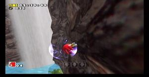 ...Y eso queda demostrado, nomás mira cuanto mas fácil hubiera sido pasar esta fase con Knuckles!.
Aunque los fachos de la casta sacerdotal siempre salen con estas cosas, a SEGA poco le importó la crítica de los neoconservadores porque total ya habían vendido 2.5 millones de copias del juego (de las cuales 1 millon se vendieron en EE. UU., donde consumen de todo de todos lados pero nunca entienden el mensaje y no se les abre la cabeza con nada porque siguen arraigados en el mismo sistema plutocrático y aristócrata, contrario a la "Libertad" que dicen defender). No obstante sí hubo críticas netamente técnicas por parte de los jugadores mas experimentados (nerds extra-vírgenes de 40 años que viven en casa de sus padres y trabajan como analistas de sistemas informáticos durante el día, y juegan Sonic durante la noche). Estos expertos gamemaníacos señalaron varias fallas del juego, principalmente el hecho de que la jugabilidad se centra demasiado en Sonic, o mas bien demasiado poco en los demás personajes, donde tenemos que Sonic es el único que juega en 10 fases distintas y todos los demás solo juegan en 5 fases, empeorando esto aún para Big y Amy, donde el gato inútil solo va a 4 fases y la pendeja histérica solo a tres. El Soniccentrismo del juego es evidente también en la calidad de los niveles jugados para cada personaje, donde Sonic es el único que juega cada nivel al completo recorriendo todas sus áreas, pero a los demás personajes los cagan rotundamente al dejarles jugar solo en una determinada área del nivel, prohibiéndoles el paso a otras, cuando a Sonic le tienen permitido ir a donde le venga en gana (a excepción de Hot Shelter). Otro punto flojo es el hecho de que ya no hay fases acuáticas donde Sonic deba aspirar cocaína burbujas para respirar bajo el agua como ocurría en los juegos clásicos; lo mas cercano a eso son algunas áreas de unos pocos niveles donde hay algun charquito de poca profundidad, como en Emerald Coast, donde Sonic puede tragar las famosas burbujas pero ya no tienen los efectos de sonido y el encanto de antes, y es innecesario tragarlas porque nomás al saltar el erizo ya vuelve a la superficie, y en definitiva no hay fases acuáticas completas como las de antes.

El PinBall de Sonic es el favorito de los fans, especialmente de los mas nostálgicos (en cambio el PinBall de NiGHTS es el favorito de los mas homosexuales).
Sin embargo esos detalles no son nada comparados con errores mas contundentes, como la espantosa jugabilidad de Big The Cat, que uno se pregunta ¡¿para que mierda lo metieron en el juego si no tiene ningun rol relevante!? (lo hubieran reemplazado por Fang, que ya era clásico desde antaño) y lo peor es obviamente su horrible modalidad de simulador de pesca, que es una tremenda cagada tediosa casi tan aburrida como la iglesia (dije "casi", tampoco seamos crueles con Big). El espantoso modo de juego de Big le quita toda la dinámica y expectativa que se podría esperar de un juego de Sonic, característicos obviamente por su alta velocidad. Por extensión vale criticar también la variedad de modos de juegos en general, lo que a primera vista sorprende y demuestra las diferentes capacidades de los personajes y la cualidad del Dreamcast para emular distintos motores de juego en un mismo título (la idea es esa, alardear de las capacidades de la consola) pero termina decepcionando ya que uno se esperaba que se pudieran usar a todos los personajes en una aventura de acción y velocidad con jugabilidad de plataformas: si antes en 1994 fue toda una emoción el Sonic 3 & Knuckles porque se podía elegir entre tres personajes distintos en un mismo juego de aventura, ahora obviamente con la promesa de 6 personajes se esperaba que todos pudieran lucirse en fases de plataformas en 3D, pero en cambio solo Sonic es el que se luce y corre en un mapeado sinuoso y pistero, en cambio a Tails lo cagan por seguir teniendo que ir tras los pasos del erizo y sin poder recorrer todo el nivel, y a los demás ya mas bien parece que les caían gordo o querían castigarlos, porque aunque es compresible (y original) que Knuckles busque los fragmentos de la Master Emerald, termina desilusionando que llega al final de su historia sin haber corrido entre las tetas de Tikal ni usado sus habilidades para cruzar las fases de Sonic como antes hizo en Sonic & Knuckles. En cuanto a los tres personajes segundones, sobre Big ya se dijo antes por qué es que resultó ser una enorme y descomunal cagada, así que dejemos descansar en paz al pobre gato y sigamos con los que faltan: la jugabilidad de Amy está bien lograda pero te hincha las pelotas el tener que andar martillándole la cabeza de la polla al robot violador cada dos segundos, y E-102 "Gamma" presenta la positiva novedad de ser el primer robot jugable en un título de Sonic, además de la innovación de ser la primera vez que en esta saga se puede jugar desde el punto de vista de Robotnik, pero el modo de disparos estilo Doom pero en tercera persona termina siendo hechado a perder por la mierda de temporizador, que si no matas enemigos para sumarle segundos al reloj entonces la cuenta regresiva llegará a 0 y pierdes por falta de tiempo, lo que es una cagada y no te permite disfrutar comodamente de la novedad de tener un androide homicida con una Uzi 9mm disparando tiros a granel.
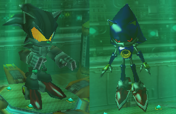 Al ver a estos engendros nos vuelve la nostalgia y nos recuerda que todo tiempo pasado fue mejor...
Finalmente los rasgos generales mas negativos que se evidencian en Sonic Adventure son su marco anacrónico y los mocosos Chao: El marco espacio-temporal del juego es anacrónico, ya que vemos a Sonic y sus amigotes en un mundo rodeado enteramente por Mobius, obviamente para promocionar sus series de animación Adventures of Sonic The Hedgehog y Sonic The Hedgehog (SatAM) (llenas de mensajes subliminales) pero debido a la escueta capacidad narrativa de los 16 Bits nunca se había entrado en detalle sobre el origen, procedencia, y contexto histórico del erizo y sus amigos. Tras anunciarse Sonic Adventure como primer título de la saga en 3D y 128 Bits se esperaba que ahora sí se aclararan todas las dudas aprovechando la mayor memoria y resolución del Dreamcast para explicar mejor la ubicación de la historia de Sonic, pero lejos de hacer eso los Jean-Paul Sartre podría responder (seguro Sartre tenía mejores cosas que hacer que ponerse a jugar a los videojuegos). Las dudas siguieron hasta que años mas tarde Sega lanzó su anime Sonic X donde explica que efectivamente Sonic y los suyos son alienígenas que llegaron accidentalmente a la Tierra teletransportándose con la energía de las Chaos Emeralds, cosa nunca vista en todo el juego ni en ninguno de los títulos posteriores, pero igual así nunca dijeron si el planeta de Sonic se llama Mobius en los juegos o el anime, y tampoco parece que tengan ganas de situar la historia de Sonic en su planeta natal, lo cual constituye uno de los más graves errores de continuidad en la franquicia del erizo, marcando un punto de quiebre que sumado a los otros errores terminarían alejando a la saga de su concepto original, generando así la consecuente debacle en la que caería SEGA en los años futuros...
En el prototipo del juego (versión Beta) Knuckles hacía el
Shoryuken pero en la versión final lo sacaron porque el Chi fucsia quedaba muy gay. Al menos deberían haberle hecho el
Chi rojo, y que lanzara un
Kamehameha!!!
Pero para no andar con malos presagios (que ya bastante tenemos con la profecía del 2012) terminemos con el otro gran elemento negativo que resulta en un tropezón para el argumento del juego: los Chao. Nunca antes habíamos visto a estos bichos, aparecieron de prepo en este juego sin que se de explicacion a su origen ni su función a futuro en la saga, que probablemente nunca la tenga, y el colmo es que nos quieran vender a estos grano en el Salma Hayek) lo peor han sido los Chao: son un derroche total de memoria que de no haber sido usado para la mierda de carreras Chao, la podrían haber empleado en mejorar la jugabilidad de los personajes, como hacerle mejor los poderes a Knuckles (en vez de lanzar destellitos debería lanzar Hadokens), permitirle mas tiempo en el aire a la habilidad de vuelo de Tails (y a Knuckles, que en vez de planear como en los 16 BITs ya podría volar libremente, que con 128 BITs si se puede hacer), hacerle a Big habilidades de verdad en vez de solo pescar (que use su fuerza bruta en vez de esa mariconada de pescar a la ranita), y restaurar el Spin-Dash para todos los personajes como era antes (ahora solo Sonic lo hace) pero principalmente, darle una jugabilidad igualitaria a todos en cuanto a los niveles se refiere, ya que con la memoria desperdiciada en los Chao podrían haber adecuado los niveles para que sean jugables por todos los personajes al completo en vez de solo Sonic tener acceso total y los demás solo a un area restringida; y podrían haberle dado 10 niveles a cada uno, y no 10 al erizo y 5 o menos para los otros.

Mas vale que la crítica sobre el
Sonic Adventure termine siendo positiva, o sino te las verás con Él!.
En suma, Sonic Adventure tiene la falla de que monopoliza el juego demasiado en Sonic y demasiado poco en los otros personajes, además de errores graves en la continuidad, como insertar a Sonic en el mundillo de los humanos en vez de mostrar por primera vez su planeta Mobius mas expandido como corresponde; y ciertamente la cagan en haberle quitado el Spin-Dash a Tails & Knuckles, así como despilfarrar kilobytes de memoria en esas mierdas de los Chao, cuando mucho mas útil hubiera sido mejorar los puntos flacos del juego, pero no obstante tuvo unos gráficos insuperables para su época, una música bien chévere y variada para cada ocasión (con temas exclusivos para cada personaje) y la jugabilidad es adictiva y veloz como se esperada, con un argumento cinematográfico de calidad hollywoodense que nos deja la moraleja de que tanto en el pasado como en el presente los megalómanos imperialistas tanto monárquicos (representados por Pachacamac) como capitalistas (representados por Eggman) han querido dominar el mundo a costa de la esclavitud de las masas y la destrucción del medio-ambiente, atrayendo como consecuencia la guerra y la destruccion mundial mediante catástrofes naturales (representadas por Perfect Chaos) y la desolación total, y por eso el deber de las buenas personas (yo, tu, Sonic y sus amigos) es luchar contra los tiranos opresivos aunque ellos posean un arsenal de armas sofisticadas (representadas por el Egg Carrier) y debemos atender el llamado de la naturaleza y la sabiduría de la filosofía ancestral (representada por Tikal) para sacar fuerzas desde nuestro interior y unirnos en comunidad para aumentar nuestro poder y hacer que el bien triunfe sobre el mal (lo que se ve en toda la escena antes, durante, y después de la Batalla Final encarnada por Super Sonic).
Legado
Secuela
Como Sonic Adventure resultó ser un juego de puta madre y de la concha de su madre, obviamente su éxito indiscutible marcó el terreno para que Sega lanzara una secuela, y así seguir currando con el erizo en su nueva consola Sega Dreamcast. La secuela fue llamada Sonic Adventure 2 (se mataron con el nombre) y mejoró los gráficos y la jugabilidad... aunque a Knuckles lo siguieron cagando con eso de buscar trozos de la Master Emerald, a Gamma no lo pusieron porque ya había muerto en Sonic Adventure, y a Amy no la dejaron participar como personaje jugable porque es una pendeja molesta, y por eso se la pasó todo el juego correteando por el plató de filmación interrumpiendo las escenas de Sonic, pero al menos Big fue retirado y aunque apareció de colado en algunas escenas sin autorización por lo menos no tuvo participación en el juego y nunca mas nos aburrió con esa mierda de simulador de pesca, así que por lo menos a la secuela del Sonic Adventure le mejoraron algunos de los fallos de la primera entrega.
Remakes
Versión remasterizada DX.
Dado que el juego fue un éxito pero al mismo tiempo fue uno de los primeros títulos de 128 BITs, los de SEGA tenían que asegurarse de que su estirpe no se perdería con el salto de lefa a las consolas de nueva generación, así que con el pasar de los años el glorioso 1998 y su Sega Dreamcast quedaron en el olvido, pero para que no olviden a Sonic, los chicos de Sega relanzaron el Sonic Adventure para las consolas del silgo XXI, Hirokazu Yasuhara, que fue el director de los juegos de Sonic durante todo su período clásico pero lo cortaron repentinamente y le dieron de patá en los cojones reemplazandolo por Takashi Iizuka, y por eso este novato fue el que dirigió Sonic Adventure en vez del experimentado Yasuhara. Parece que el novato de Iizuka convenció al CEO de Sega de pegarse un viaje a Cancún para "inspirarse" para el guión del juego, y por eso compró el visto bueno de los jefes al proponerles irse de farra a la playa (y con un reventón se ve que es suficiente para que los directivos cambien el rumbo de la empresa y lo hecharan a patadas a Hirokazu Yasuhara).
Como sea, mas allá de los oscuros entretelones que siempre hay tras bambalinas, la cosa es que luego de la caída de la URSS Sega Dreamcast, Sonic Adventure subsistió en las nuevas consolas bajo el nombre de Sonic Adventure DX, que en realidad no es un remake ya que no se iban a molestar en hacer todo el juego desde cero, nomás lo remasterizaron para mejorarle los gráficos, haciéndolos mas o menos de la calidad del Sonic Adventure 2, pero los sprites de los personajes siguen siendo los mismos de la primera entrega, y los niveles, la historia, en fin, todo igual; es la misma mierda con distinto olor, para hacerte comprar el mismo juego dos veces. Entre los cambios que hicieron fue agregarle mas minijuegos y "extras" como para que no digan que te pusiste a juntar los 130 emblemas al reverendo pedo, así que ahora a medida que juntas emblemas vas desbloqueando viejos juegos de consolas anteriores, y esa es la "gran" novedad de Sonic Adventure DX: como "bonus track" te trae un compilado de todos los viejos juegos de Sonic para Game Gear, y como cereza del postre puedes desbloquear también al clásico Metal Sonic, que en la versión original de Dreamcast solo aparecía en animación suspendida en la entrada a Final Egg, pero ahora si desbloqueas a Metal Sonic puedes ir hasta allí y ver como sigue criogenizado a pesar de que al mismo tiempo tú lo estas usando, por lo tanto como vemos solo mejoraron los gráficos y pusieron como personaje secreto a Metal Sonic (y un cameo de Cream), sumado a todos los juegos del Game Gear para entusiasmar a los niñatos de nueva generación que no habían nacido cuando estaba en auge la portátil de 8 BITs, así que por eso pusieron esos juegos aquí para tratar de relanzar el fanatismo que había antaño por Sonic, pero los niñatos no se convencieron demasiado con los títulos del Game Gear y los viejos fans tampoco, porque la memoria extra que gastaron para poner a Metal Sonic y a los juegos de 8 BITs la deberían haber usado para mejorar las habilidades y estilos de juego de los personajes, pero en vez de eso siguieron monopolizando toda la buena onda en Sonic y a los otros los siguieron cagando, nomás que ahora los cagan en HD (o sea que en Sonic Adventure DX el mundillo de los Chao es una cagada remasterizada en Alta Definición).
NOTA: La versión descargable para PlayStation Network, y de Steam para PC es conocida con el nombre extraoficial de Sonic Adventure 2010, obviamente por el año en que se lanzó, pero se trata solamente de un re-relanzamiento que viene a ser la versión remasterizada del Sonic Adventure DX, que a su vez esa ya es la versión remasterizada del Sonic Adventure original... ¡¡o sea que estos hijos de puta te quieren hacer pagar por el mismo juego tres veces!!
Trivia

En
Japón lanzaron
Knuckles Adventure, la versión del juego protagonizada por el equidna rojo.
...Y también salió el
Knuckles Adventure International, obviamente para exportar, pero solamente se lo pudieron vender a
Corea del Norte porque es el único país que quiere un videojuego protagonizado por un
rojo.
- Sonic Adventure cambió totalmente el estilo de los juegos de Sonic, renovando la saga con tramas mas complejas y habiendo rediseñado el aspecto de los personajes para que se vean mas maduros (Amy y Robotnik son los mas notorios). También marcó el estilo de juego de plataformas en 3D que debería seguir la saga en sus posteriores secuelas, pero sin embargo solo Sonic Adventure 2 siguió el mismo estilo, y las continuaciones posteriores fueron cayendo de regular a malo, hasta ir de mal en peor y haberla cagado por completo arruinando la serie, y todo por no seguir el estilo revolucionario de Sonic Adventure.
- Este es el primer juego donde vemos que al Dr. Robotnik le dicen "Dr. Eggman", como un apodo de mal gusto. Sin embargo Dr. Eggman era el nombre original en la versión japonesa, pero los gringos lo cambiaron por "Dr. Robotnik" y por eso los gaijins no lo supimos hasta que jugamos Sonic Adventure. Sin embargo desde entonces todos los otakus y frikis le dicen Eggman aún cuando hablan de los juegos viejos, pese a que en esa época no tenían ni puta idea de que se llamaba así.
- Sonic Adventure fue el primer título de la serie donde aparecieron Big The Cat, Froggy, Tikal, E-102 y Chaos. También fue el último título donde aparecieron la mayoría de ellos, porque son de lo mas chafa (aunque todos menos Froggy vuelven a hacer cameos y papeles menores en otros títulos).
- En el nivel Casinopolis puedes ir al duchas puede bañarse y quitarse lo mugroso. Sin embargo cuando Tails y Knuckles se meten no se duchan, lo que demuestra que son todavía mas mugrosos que Sonic.
El
Dragon Robot que fue suprimido de la versión final porque los
chinos lo consideraron un insulto racista a su cultura.
- En la versión beta del juego Tails volaba en el avión Tornado durante Sky Chase pero disparaba contra un robot con forma de Dragón. Obviamente lo sacaron porque quedaba muy chafa, y porque es mas realista que pilotee el biplano contra toda una flota de caza-bombarderos que despeguen del Portaaviones Huevo, para que la fase sea un plagio del Combat Flight Simulator, que a su vez inspiró a los realizadores de la serie Ases de Combate del History Channel.
- En el capítulo final de Super Sonic vemos que Angel Island vuelve a caer al océano pese a tener la Master Emerald restaurada al 100%. Sin embargo luego del final del juego no vemos que Angel Island vuelva a reflotar y ascender al cielo, y en la secuela Sonic Adventure 2 a Knuckles le vuelven a robar la Master Emerald pero nunca aparece Angel Island en ese juego, así que por lo visto la isla siguió en el océano y por eso fue fácil que le volvieran a robar la esmeralda otra vez (que si la isla volvió al Cielo pero esa escena no la mostraron, entonces a Knuckles igual le robaron la esmeralda aún estando en el aire, así que entonces es un pelot* * * ).
- Amy & Big vuelven a aparecer como personajes jugables recién en Sonic Heroes. Esta vez ya tienen fases de acción en serio en vez de escapar de un androide violador y pescar un renacuajo, respectivamente, pero el modo de juego es de ir de a grupos de tres así que igual les volvieron a cagar el protagonismo que nunca tuvieron.
- Sonic Adventure DX tiene un modo "Mission" donde el jugador de vez en cuando tiene que recoger unas medallas de oro de Sonic. Curiosamente, estas son las mismas medallas de oro de Sonic de Sonic R, lo que sumado a los recurrentes muñecos de Tails que hay en Final Egg, todo indica que SEGA estuvo tratando de resucitar a Tails Doll para cometer mas asesinatos en masa (para "eliminar a la competencia"^^).
- El espíritu de Tikal se le aparece a todos los personajes al menos una vez a cada uno para darles visiones del pasado, a excepción de Knuckles que es al único ante el cual se le aparece muchas mas veces porque él es El Guardián y por eso Tikal quiere darle
una mamada mas visiones para que tenga mas conocimientos de la historia de la Civilización Ancestral.
- Existe una línea no utilizada de Tikal para sus ayudas durante el juego, y dice: "Reúne 50 anillos y presiona el botón de acción mientras saltas. Vas a transformarse en Super Sonic! Pero ten cuidado con el consumo de anillos." lo que significa que Super Sonic originalmente iba a ser jugable en los niveles normales, al igual que lo fue en Sonic 2 y Sonic 3 & Knuckles, ¡y los hijos de puta del Sonic Team la cagaron y terminaron haciendo un Super Sonic que solo está disponible contra el Jefe Final!.
- En la versión de PC del Sonic Adventure DX puedes hacer un hack para usar a Super Sonic todo el tiempo, pero de todas formas te quedas con las ganas de haberlo visto en el Dreamcast.
- En Sonic Generations sí puedes jugar con Super Sonic en las fases de acción pero solo Speed Highway es la única fase sacada de Sonic Adventure. Además te caga en que contra Perfect Chaos solo sigues peleando siendo Sonic normal... ¿pero si en su estado normal puede derrotarlo entonces para que mierda se transformó en Super Sonic para derrotarlo la primera vez? (Fail!).
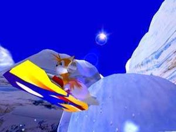 Si la foto se ve borrosa es porque la luz del sol encandila la lente de la cámara.
- Sonic Adventure es el primer juego en ofrecer contenido extra descargable desde la mercado negro de los Chao para comprar especímenes exóticos de contrabando (posiblemente traídos desde Australia) pero el modem del Dreamcast no permitía descargar nada de pornografía, y por eso este fue uno de los motivos por los que la consola dejó de fabricarse.
- Las 2.5 millones de copias de Sonic Adventure lo convierten en el juego mas vendido de la
historia Sega Dreamcast. Esta información solo les interesa a los accionistas, pero sin embargo lo que los accionistas no supieron es que se habrían vendido otras 5.000.000 millones de copias, pero esas eran copias pirata y por eso las acciones de SEGA cayeron en picada cuando los inversionistas se enteraron.
Knuckles sobrevolando Speed Highway, demostrando que es mas rápido que... una Van modelo 1960 ¬¬
- Las copias pirata tienen un glitch que impide que se reproduzca la música de Sky Deck Act 2, y por eso los sudacas creyeron erróneamente que la fase de Sky Deck con Knuckles era sin música, pero en realidad eso es un fallo (igual al equidna siempre lo terminan cagando).
- En la versión original de Dreamcast si metes el wallpapers exclusivos bien chidos, pero el 69% de los jugadores compraron copias piratas del juego y por eso se quedaron sin wallpapers y los tuvieron que buscar en la web.
- Cream The Rabbit hace un cameo en la versión DX, volando sobre Station Square, porque para la fecha de lanzamiento del remake ya habían sacado a esta coneja de la galera (literalmente) pero antes en el 98/99 todavía ni existía y por eso en el original de Dreamcast no aparece.
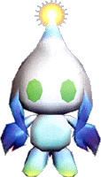 Este Chao está basado en Chaos, y por eso es inmortal. También hay unos Chao robóticos llamados
Omochao, pero esos son
homosexuales de adorno y solo aparecen en las Carreras Chao.
- El diseño de los Chao está basado en el personaje de Sanrin Sanchan, un juego para bebés que SEGA lanzó en comedia de Oh! Super Milk-Chan, así que como vemos estos japos no tenían ganas de trabajar y nomás reciclaron viejos personajes pasados de moda (Alex Kidd será el próximo...).
- En Japón existen un total de 5 versiones de Sonic Adventure: El Sonic Adventure: Limited Edition que fue la versión casi terminada lanzada de antemano (es la misma mierda pero sin internet), el Sonic Adventure lanzado oficialmente en 1998 (sí, ahora con internet), el Sonic Adventure International (la versión para gaijins que todos conocemos, con subtítulos en inglés, español, francés, alemán, y obviamente japonés), y los ya mencionados Sonic Adventure DX y Sonic Adventure 2010 que todos conocemos. También se pensó en lanzar una versión en klingon pero los fans de Star Wars se iban a enojar y por eso Sega abandonó la idea.
- El Egg Carrier reaparece en Sonic The Hedgehog para Playstation 3 & Xbox 360, o sea que ese sería el "Egg Carrier 3" pero ni se gastaron en llamarlo así porque total Sonic y sus amigotes terminaron haciéndolo mierda igual que a los dos anteriores.
- El nombre de la Capital Imperial del Egg Reich, "Eggmanland" vuelve a ser utilizado en circo de mierda.
- La música del Twinkle Circuit es un remix de It Doesn't Matter, el tema de Sonic, lo que demuestra el soniccentrismo de los realizadores, que deberían haber hecho un mix con las canciones de todos los personajes en vez de basarse solo en el erizo.
- Las músicas de Mystic Ruins, Lost World y la canción de Tikal tienen armonías precolombinas de estilo maya, pero solo el tema de Tikal permite alcanzar el estado meditativo profundo, así que siéntate a meditar y pruébalo tú mism@!
- La canción Open Your Heart fue el primer éxito de la banda J-Rock Crush 40, que compuso la banda sonora del juego. Desgraciadamente las bandas sonoras de los dos juegos "Sonic Adventure" fueron el único éxito que tuvieron, y por eso ahora andan pidiendo limosna tirados en una esquina (aunque cada tanto SEGA los contrata para que graben la música de otros juegos, a cambio de un plato de Chao Fan con Kanikama y una botella de Sake).
Screenshots
Knuckles llendo a saquear la bóveda de Casinopolis (jamás podría trabajar de tesorero).
Sonic trepando por las estalactitas (con Tails o Knuckles este nivel habría sido pan comido)
Amy escapando del androide violador, que se excita teniendo sexo frente al espejo.
A Sonic le gusta corretear por las paredes de los edificios para entrar a robar a los apartamentos.
Knuckles vuela sobre la Montaña Roja para demostrar que supera este nivel mejor que Sonic.
El Guardián buscando las Esmeraldas en esta fase sin música (se nota que tengo la versión pirata del juego).
E-102 "Gamma" volando sobre el tren que lleva refacciones para la línea de montaje del Refugio Caliente.
La clásica escena donde debes víbora hecha de roca pueda flotar en el agua).
Knuckles por fin consiguió las 7 Chaos Emeralds para transformarse en Super Knuckles (pero le siguen cagando el peinado, que se lo tendrían que haber erizado como a los Supersaiyans).
Enlaces Eternos
|
|
 Shooter Shooter
 Terror Terror
 Rol Rol
 Estrategia Estrategia
 Aventuras Aventuras
 Fight! Fight!
 Clásicos Clásicos
 Deportivos Deportivos
 Aventura gráfica Aventura gráfica
 Novela visual Novela visual
 Personajes de videojuegos Personajes de videojuegos
|
Autor(es):
- Mad Max
- Gñapero Solitario
- Shadowmura
- Generibot
Frikipedia 2005-2016, Licencia
GFDL 1.2 - Extraído por FrikiLeaks

{kind=link}
{kind=link}